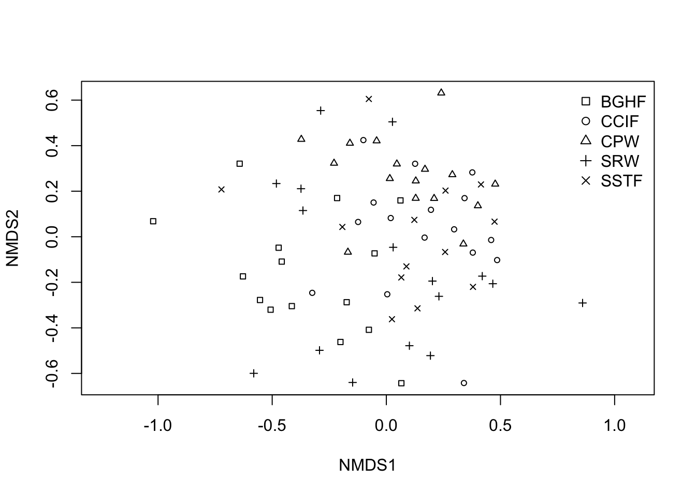

library(vegan)Loading required package: permutelibrary(MASS)
CopepodData <- read.csv("data/CopepodData.csv", header = TRUE)Quinn, G. P. and Keough, M. J. (2002, 2023) Experimental Design and Data Analysis for Biologists. Cambridge University Press (1st and 2nd edition).
Han, S. Y., Filippi, P., Román Dobarco, M., Harianto, J., Crowther M. S., and Bishop, T. F. A. (2023). Multivariate analysis for soil science. In ‘Encyclopedia of Soils in the Environment (Second Edition)’. (Ed. M. J. Goss and M. Oliver) pp. 499-508. Academic Press: Oxford.
At the end of this practical students should be able to:
1. Calculate a similarity matrix or transformed data
2. Plot an ordination using Non-metric Multidimensional Scaling (nMDS)
3. Statistically test differences between factors using a ANOSIM and PERMANOVA
4. Determine what contributes most to the differences using a SIMPER analysis
Working directory Set the working directory for this tutorial and ensure you copy all data into this directory and save your code into the directory. setwd(“C:/Users/.”)
It is thought that copepod (a marine invertebrate) assemblages in Solbergstrand, Norway are affected by nutrient levels. There were 4 spatially independent sites for each treatment in;
a) Control sites (C),
b) Low nutrient sites(L) and
c) High nutrient sites (H).
We want to know if there is a pattern in species assemblages using nMDS, whether there is a statistically significant difference between treatments using ANOSIM and what species contribute to these differences via SIMPER.
First you need to load the packages vegan and MASS and file CopepodData.csv
library(vegan)Loading required package: permutelibrary(MASS)
CopepodData <- read.csv("data/CopepodData.csv", header = TRUE)Now the data is entered, let’s apply a 4th root transformation. This will take the emphasis from the more common species. Other transformations include the square root transformation and the log transformation. Other transformations included square root, presence/absence and log. You can also standardise the data if there are differences in the amount of sampling (which there isn’t here).
TransCopepodData <- (CopepodData[,2:20])^(1/4)Now let’s generate a Bray-Curtis dissimilarity matrix on this transformed data and perform a nMDS. Bray-Curtis similarities are useful for this kind of data, as they did not group sites by shared absences. For environmental data, a Euclidean distance would be more useful.
copepod.dis <- vegdist(TransCopepodData, method="bray")Now let’s look at the nMDS with labels for Community and take a note of the stress value (how well the ordination represents the data). A great stress value is <0.1, an OK stress value is between 0.1 and 0.2, and >0.2 is not so good. A stress greater than 0.3 is essentially arbitrary.
Next we plot the nMDS, labelling the sites with treatment.
pchs<- c(0:2)
Copepod_Factor <- factor(CopepodData$Treatment)
nMDS_copepod <- metaMDS(TransCopepodData, distance="bray", k=2) Run 0 stress 0.1003895
Run 1 stress 0.09313703
... New best solution
... Procrustes: rmse 0.06920897 max resid 0.1880611
Run 2 stress 0.1145506
Run 3 stress 0.1145514
Run 4 stress 0.09313704
... Procrustes: rmse 4.172137e-05 max resid 6.123411e-05
... Similar to previous best
Run 5 stress 0.09313703
... Procrustes: rmse 5.264303e-06 max resid 8.51057e-06
... Similar to previous best
Run 6 stress 0.1102998
Run 7 stress 0.1003895
Run 8 stress 0.1003895
Run 9 stress 0.3359232
Run 10 stress 0.110277
Run 11 stress 0.09313703
... Procrustes: rmse 2.20052e-05 max resid 3.183964e-05
... Similar to previous best
Run 12 stress 0.09313703
... Procrustes: rmse 3.655204e-06 max resid 5.320949e-06
... Similar to previous best
Run 13 stress 0.1003895
Run 14 stress 0.09313703
... Procrustes: rmse 6.41951e-06 max resid 1.051411e-05
... Similar to previous best
Run 15 stress 0.09313703
... Procrustes: rmse 5.993992e-06 max resid 1.227241e-05
... Similar to previous best
Run 16 stress 0.09313703
... Procrustes: rmse 1.73614e-05 max resid 2.691538e-05
... Similar to previous best
Run 17 stress 0.2236026
Run 18 stress 0.2260812
Run 19 stress 0.110277
Run 20 stress 0.1003895
*** Best solution repeated 7 timesplot_copepod <- ordiplot(nMDS_copepod, display = "sites", type="n")
points(nMDS_copepod, col="black", pch = pchs[Copepod_Factor])
legend("topright", bty = "n", legend = levels(Copepod_Factor), pch = pchs)
nMDS_copepod
Call:
metaMDS(comm = TransCopepodData, distance = "bray", k = 2)
global Multidimensional Scaling using monoMDS
Data: TransCopepodData
Distance: bray
Dimensions: 2
Stress: 0.09313703
Stress type 1, weak ties
Best solution was repeated 7 times in 20 tries
The best solution was from try 1 (random start)
Scaling: centring, PC rotation, halfchange scaling
Species: expanded scores based on 'TransCopepodData' Exercise: Can you see a separation between treatments for copepod assemblages?
Exercise: What is the stress and is it good?
Let’s test if the groups are significantly different using ANOSIM (Analysis of Similarities), a non-parametric permutation test. We will use 999 permutations to calculate the significance level.
So, let’s test for Treatment
copepod.anosim <- with(CopepodData, anosim(copepod.dis, CopepodData$Treatment))
summary(copepod.anosim)
Call:
anosim(x = copepod.dis, grouping = CopepodData$Treatment)
Dissimilarity: bray
ANOSIM statistic R: 0.8495
Significance: 0.001
Permutation: free
Number of permutations: 999
Upper quantiles of permutations (null model):
90% 95% 97.5% 99%
0.206 0.269 0.341 0.412
Dissimilarity ranks between and within classes:
0% 25% 50% 75% 100% N
Between 12 28.50 42.5 54.25 66 48
C 1 6.50 9.5 16.25 23 6
H 7 18.25 25.0 29.50 32 6
L 2 3.25 4.5 8.00 10 6plot(copepod.anosim)Warning in (function (z, notch = FALSE, width = NULL, varwidth = FALSE, : some
notches went outside hinges ('box'): maybe set notch=FALSE
Is there a significant difference between the different treatments? We can see that using a brand-new ANOSIM code.
# Extract a grouping factor (e.g., Management type)
group <- CopepodData$Treatment
# Perform ANOSIM for all groups combined
anosim_all <- anosim(copepod.dis, group)
print(anosim_all)
Call:
anosim(x = copepod.dis, grouping = group)
Dissimilarity: bray
ANOSIM statistic R: 0.8495
Significance: 0.001
Permutation: free
Number of permutations: 999pairwise.anosim <- function(copepod.dis, group, p.adjust.method = "holm", ...) {
# Ensure grouping is a factor
group <- factor(group)
groups <- levels(group)
# Generate all unique pairs of group levels
pairs <- t(combn(groups, 2))
# Prepare storage for results
results <- data.frame(
group1 = character(),
group2 = character(),
R = numeric(),
p.value = numeric(),
stringsAsFactors = FALSE
)
# Loop through each pair
for (i in seq_len(nrow(pairs))) {
g1 <- pairs[i, 1]
g2 <- pairs[i, 2]
# Subset the data to just these two groups
keep <- group %in% c(g1, g2)
dist_sub <- as.dist(as.matrix(copepod.dis)[keep, keep])
group_sub <- droplevels(group[keep])
# Run ANOSIM
anosim_res <- anosim(dist_sub, group_sub, ...)
# Store results
results <- rbind(
results,
data.frame(
group1 = g1,
group2 = g2,
R = anosim_res$statistic,
p.value = anosim_res$signif,
stringsAsFactors = FALSE
)
)
}
# Adjust p-values for multiple comparisons
results$p.adjusted <- p.adjust(results$p.value, method = p.adjust.method)
return(results)
}
pairwise_results <- pairwise.anosim(copepod.dis, group, p.adjust.method = "holm")
pairwise_results group1 group2 R p.value p.adjusted
1 C H 0.96875 0.024 0.072
2 C L 1.00000 0.028 0.072
3 H L 0.59375 0.030 0.072Exercise: Was there a significant difference between treatments for copepod assemblages? What was the Global R value? Were there significant differences between sites?
To see what species of copepods are contributing to the differences between treatments, we can use a SIMPER analysis (Similarity Percentages). The average is the amount that species contributes to the dissimilarity between the groups. The sd is the standard devation (i.e the variation) of the average dissimilarity contribution. The ratio is the average dissimilarity/sd. The ava and avb are the average abundances of that species to the group. The cumsum is the ordered cumulative contribution to the dissimilarity between groups. Note we can ignore the cumulative 70%.
Note we use the ratio as the rank for the species that mostly separate the groups.
If R approaches 1 the dissimilarity between groups is greater than the dissimilarity within groups, if R is close to 0 the dissimilarity within groups is about the same as the dissimilarity between groups, and if R approaches -1, the variation within groups is greater than the dissimilarity between groups.
copepod.simper <- simper(TransCopepodData, CopepodData$Treatment)
summary(copepod.simper)
Contrast: C_L
average sd ratio ava avb cumsum p
Tisbe.sp.4 0.12602 0.01742 7.23200 0.00000 3.64100 0.189 0.003 **
Tisbe.sp.2 0.08194 0.00696 11.77800 0.00000 2.37300 0.311 0.008 **
Tisbe.sp.3 0.07820 0.04708 1.66100 0.00000 2.28200 0.428 0.046 *
Tisbe.sp.5 0.05630 0.05839 0.96400 0.00000 1.66100 0.513 0.313
Halect.gothic 0.05107 0.02030 2.51600 0.50000 1.96800 0.589 0.043 *
Ameira.parvula 0.04409 0.00342 12.89100 0.00000 1.27700 0.655 0.009 **
Cyclopoida 0.02920 0.01798 1.62400 0.84460 0.00000 0.699 0.180
Copepodit.ind 0.02868 0.01653 1.73500 0.25000 1.07900 0.742 0.149
Stenhelia.refl 0.02527 0.01845 1.37000 0.82900 0.29700 0.780 0.420
Amphiascus.ten 0.02428 0.02342 1.03700 0.25000 0.68900 0.816 0.209
Proameira.simp 0.02367 0.02489 0.95100 0.00000 0.67100 0.852 0.007 **
Enhydros.long 0.02296 0.01856 1.23700 1.14190 0.57900 0.886 0.841
Ancorab.mirab 0.02015 0.02351 0.85700 1.03610 1.47000 0.916 0.880
Bulbamph.imus 0.01802 0.01877 0.96000 0.54730 0.00000 0.943 0.398
Daniel.fusifo 0.01324 0.00931 1.42200 1.00000 1.37300 0.963 0.906
Laophontidae 0.00891 0.01597 0.55800 0.00000 0.25000 0.976 0.013 *
Leptopsy.para 0.00873 0.01563 0.55800 0.25000 0.00000 0.990 0.704
Typhlam.typhl 0.00703 0.00550 1.27800 1.30170 1.47700 1.000 0.999
Tisbe.sp.1 0.00000 0.00000 NaN 0.00000 0.00000 1.000 NA
---
Signif. codes: 0 '***' 0.001 '**' 0.01 '*' 0.05 '.' 0.1 ' ' 1
Contrast: C_H
average sd ratio ava avb cumsum p
Tisbe.sp.1 0.12838 0.05504 2.33200 0.00000 2.28280 0.155 0.001 ***
Tisbe.sp.3 0.07987 0.05554 1.43800 0.00000 1.48270 0.251 0.041 *
Typhlam.typhl 0.07134 0.01048 6.80800 1.30170 0.00000 0.337 0.001 ***
Tisbe.sp.2 0.06684 0.04205 1.59000 0.00000 1.31490 0.418 0.032 *
Enhydros.long 0.06297 0.01168 5.39100 1.14190 0.00000 0.494 0.001 ***
Tisbe.sp.5 0.06165 0.04244 1.45300 0.00000 1.23230 0.568 0.118
Tisbe.sp.4 0.04869 0.05131 0.94900 0.00000 1.02410 0.627 0.991
Stenhelia.refl 0.04526 0.02867 1.57900 0.82900 0.00000 0.681 0.008 **
Ameira.parvula 0.04380 0.02667 1.64200 0.00000 0.84460 0.734 0.009 **
Ancorab.mirab 0.04305 0.03671 1.17300 1.03610 1.14890 0.786 0.106
Cyclopoida 0.03908 0.03005 1.30000 0.84460 0.25000 0.833 0.031 *
Daniel.fusifo 0.03472 0.02934 1.18300 1.00000 0.57900 0.875 0.023 *
Bulbamph.imus 0.02783 0.02938 0.94700 0.54730 0.00000 0.909 0.045 *
Halect.gothic 0.02726 0.02902 0.93900 0.50000 0.25000 0.942 0.999
Copepodit.ind 0.02182 0.02962 0.73700 0.25000 0.25000 0.968 0.661
Leptopsy.para 0.01395 0.02527 0.55200 0.25000 0.00000 0.985 0.135
Amphiascus.ten 0.01277 0.02308 0.55300 0.25000 0.00000 1.000 0.813
Proameira.simp 0.00000 0.00000 NaN 0.00000 0.00000 1.000 NA
Laophontidae 0.00000 0.00000 NaN 0.00000 0.00000 1.000 NA
---
Signif. codes: 0 '***' 0.001 '**' 0.01 '*' 0.05 '.' 0.1 ' ' 1
Contrast: L_H
average sd ratio ava avb cumsum p
Tisbe.sp.4 0.08575 0.04324 1.98300 3.64100 1.02410 0.149 0.082 .
Tisbe.sp.1 0.07326 0.02796 2.62000 0.00000 2.28280 0.276 0.091 .
Halect.gothic 0.05378 0.01410 3.81500 1.96800 0.25000 0.370 0.019 *
Tisbe.sp.5 0.05238 0.03401 1.54000 1.66100 1.23230 0.460 0.476
Tisbe.sp.3 0.04921 0.03207 1.53500 2.28200 1.48270 0.546 0.892
Typhlam.typhl 0.04684 0.00580 8.07600 1.47700 0.00000 0.627 0.030 *
Tisbe.sp.2 0.03665 0.02956 1.24000 2.37300 1.31490 0.691 0.994
Daniel.fusifo 0.02801 0.02171 1.29000 1.37300 0.57900 0.740 0.184
Copepodit.ind 0.02569 0.01470 1.74700 1.07900 0.25000 0.784 0.297
Amphiascus.ten 0.02244 0.02375 0.94500 0.68900 0.00000 0.823 0.369
Ancorab.mirab 0.02243 0.01715 1.30700 1.47000 1.14890 0.862 0.855
Proameira.simp 0.02169 0.02288 0.94800 0.67100 0.00000 0.900 0.070 .
Enhydros.long 0.01780 0.01868 0.95300 0.57900 0.00000 0.930 0.991
Ameira.parvula 0.01457 0.01799 0.81000 1.27700 0.84460 0.956 1.000
Stenhelia.refl 0.00885 0.01589 0.55700 0.29700 0.00000 0.971 0.986
Cyclopoida 0.00843 0.01509 0.55800 0.00000 0.25000 0.986 0.996
Laophontidae 0.00816 0.01466 0.55700 0.25000 0.00000 1.000 0.182
Bulbamph.imus 0.00000 0.00000 NaN 0.00000 0.00000 1.000 NA
Leptopsy.para 0.00000 0.00000 NaN 0.00000 0.00000 1.000 NA
---
Signif. codes: 0 '***' 0.001 '**' 0.01 '*' 0.05 '.' 0.1 ' ' 1
Permutation: free
Number of permutations: 999Exercise: Which species most contribute to the separation between treatments?
This is a study of the diversity of ants found in bushland remnants in the Sydney region. The ants were sampled with pitfall traps in the ground, and taken back to the lab to determine their species and relative abundance in each sample.
In this example we are looking at a collection of ants sampled in different vegetation communities (“Community”) and whether they were sampled in the interior or on the edge of the vegetation community (“Sample”). We expected that the abundance and diversity of ants (the assemblage) would be different in different vegetation communities, and that the diversity of ants would be different in the interior to the edge of the vegetation community.
This leads to three multivariate null hypotheses.
H0: There is no difference in ant assemblage between the different vegetation communities.
H0: There is no difference in ant assemblage between the interior and the edge of the community.
H0: There is no interaction between the vegetation community and the location for the ant assemblages
We want to know if there is a pattern in species assemblages using nMDS, whether there is a statistically significant difference between communities and samples using PERMANOVA, and what species contribute to these differences via SIMPER.
First you need to load the packages vegan and MASS and file AntData.csv,
library(vegan)
library(MASS)
AntData <- read.csv("data/AntDataTotal.csv", header = TRUE)Now the data is entered, let’s apply a 4th root transformation, like in the example above,
TransAntData <- (AntData[,4:103])^(1/4)Now let’s generate a Bray-Curtis dissimilarity matrix on this transformed data.
ant.dis <- vegdist(TransAntData, method = "bray")Now let’s look at the nMDS with labels for Community and take a note of the stress value (how well the ordination represents the data). A great stress value is <0.1, an OK stress value is between 0.1 and 0.2, and >0.2 is not so good. A stress greater than 0.3 is essentially arbitrary.
pchs<- c(0:5)
Ant_Factor <- factor(AntData$Community)
nMDS_Ant <- metaMDS(TransAntData, distance="bray", k=2)Run 0 stress 0.2869097
Run 1 stress 0.2895111
Run 2 stress 0.2903446
Run 3 stress 0.2871656
... Procrustes: rmse 0.03721497 max resid 0.162524
Run 4 stress 0.299054
Run 5 stress 0.3020263
Run 6 stress 0.2879711
Run 7 stress 0.2889032
Run 8 stress 0.2867978
... New best solution
... Procrustes: rmse 0.04581971 max resid 0.1499163
Run 9 stress 0.2887396
Run 10 stress 0.294087
Run 11 stress 0.2987492
Run 12 stress 0.2934602
Run 13 stress 0.2902736
Run 14 stress 0.2856511
... New best solution
... Procrustes: rmse 0.07007276 max resid 0.2494061
Run 15 stress 0.2893781
Run 16 stress 0.3052214
Run 17 stress 0.2880005
Run 18 stress 0.2875764
Run 19 stress 0.2956403
Run 20 stress 0.2943664
*** Best solution was not repeated -- monoMDS stopping criteria:
3: no. of iterations >= maxit
17: stress ratio > sratmaxplot_Ant <- ordiplot(nMDS_Ant, display = "sites", type="n")
points(nMDS_Ant, col="black", pch = pchs[Ant_Factor])
legend("topright", bty = "n", legend = levels(Ant_Factor), pch = pchs)
nMDS_Ant
Call:
metaMDS(comm = TransAntData, distance = "bray", k = 2)
global Multidimensional Scaling using monoMDS
Data: TransAntData
Distance: bray
Dimensions: 2
Stress: 0.2856511
Stress type 1, weak ties
Best solution was not repeated after 20 tries
The best solution was from try 14 (random start)
Scaling: centring, PC rotation, halfchange scaling
Species: expanded scores based on 'TransAntData' Exercise: Can you see a separation between communties?
Exercise: What is the stress and is it good?
We can test for differences between Communities, Samples and their Interactions using PERMANOVA (called Adonis in the package vegan). This is better for analyses with at least 2 factors than ANOSIM, as it can test the interactions. We use 999 permutations to calculate the significance (p) value. You interpret the PERMANOVA table like an ANOVA Table, except permutations are used to generate the p value,
# PERMANOVA with interaction using adonis2
adonis2(vegdist(TransAntData) ~ Community * Sample,
data = AntData,
permutations = 999,
by = "terms")Permutation test for adonis under reduced model
Terms added sequentially (first to last)
Permutation: free
Number of permutations: 999
adonis2(formula = vegdist(TransAntData) ~ Community * Sample, data = AntData, permutations = 999, by = "terms")
Df SumOfSqs R2 F Pr(>F)
Community 4 2.8190 0.13512 2.6985 0.001 ***
Sample 1 0.1918 0.00919 0.7345 0.744
Community:Sample 4 0.6160 0.02953 0.5897 0.992
Residual 66 17.2367 0.82616
Total 75 20.8636 1.00000
---
Signif. codes: 0 '***' 0.001 '**' 0.01 '*' 0.05 '.' 0.1 ' ' 1Exercise: Is there a significant difference for the Community, Sample and/or their interaction?
If we find an overall significant p value, we need to see which level is significant from which other level. Here we can do pairwise tests (a bit like post-hoc tests in ANOVAs), with the p value adjusted with a Bonferroni correction. Here we need to create a function to do this, as it is not standard in the vegan package. So copy and paste this function.
To do the pairwise tests, there is a new R command on github and you can copy this text below to do it. This is for the Community factor in the ant data.
Note the first time you do this, you need to first install Rtools from here https://cran.r-project.org/bin/windows/Rtools/
library(devtools)Loading required package: usethis
Attaching package: 'devtools'The following object is masked from 'package:permute':
checkinstall_github("pmartinezarbizu/pairwiseAdonis/pairwiseAdonis")Using GitHub PAT from the git credential store.Skipping install of 'pairwiseAdonis' from a github remote, the SHA1 (cb190f76) has not changed since last install.
Use `force = TRUE` to force installationlibrary(pairwiseAdonis)Loading required package: clusterpairwise.adonis(TransAntData, AntData$Community) pairs Df SumsOfSqs F.Model R2 p.value p.adjusted sig
1 BGHF vs CCIF 1 1.1326581 4.532465 0.13516648 0.001 0.01 *
2 BGHF vs CPW 1 1.3163257 5.351814 0.15579421 0.001 0.01 *
3 BGHF vs SRW 1 0.6422157 2.204225 0.07063867 0.016 0.16
4 BGHF vs SSTF 1 0.7759586 2.965274 0.10237341 0.001 0.01 *
5 CCIF vs CPW 1 0.4603595 2.075474 0.06470596 0.013 0.13
6 CCIF vs SRW 1 0.5712089 2.149875 0.06687041 0.009 0.09
7 CCIF vs SSTF 1 0.3236528 1.381556 0.04867796 0.173 1.00
8 CPW vs SRW 1 0.8702832 3.323148 0.09972490 0.001 0.01 *
9 CPW vs SSTF 1 0.4584616 1.993009 0.06874103 0.009 0.09
10 SRW vs SSTF 1 0.4534517 1.626466 0.05681688 0.062 0.62 Exercise: Which communities are significantly different from each other?
To see what species are contributing to the differences between the vegetation communities, we can again use a SIMPER analysis (Similarity Percentages)
antsim <- simper(TransAntData, AntData$Community)
summary(antsim)
Contrast: BGHF_CCIF
average sd ratio ava avb cumsum p
Pheidole.5 0.05345 0.04054 1.31860 0.44630 1.22750 0.069 0.001
Tetramorium.3 0.04337 0.03735 1.16130 0.71720 0.00000 0.125 0.001
Anonychromyrma.1 0.03847 0.03475 1.10700 0.69070 0.25380 0.174 0.019
Pheidole.7 0.03459 0.03500 0.98840 0.50690 0.38970 0.219 0.029
Rhytidiponera..metallica. 0.03448 0.03747 0.92030 0.98380 1.30250 0.263 0.294
Tapinoma.1 0.03402 0.03186 1.06780 0.42520 0.65120 0.307 0.118
Monomorium.1 0.03233 0.04049 0.79850 0.45680 0.29450 0.349 0.036
Meranoplus.1 0.02743 0.03296 0.83210 0.34180 0.33620 0.384 0.438
Notoncus.1 0.02495 0.03250 0.76780 0.20000 0.37000 0.416 0.713
Paratrechina.1 0.02038 0.02882 0.70720 0.21260 0.25000 0.443 0.829
Machomyrma.1 0.01886 0.03016 0.62530 0.00000 0.33620 0.467 0.645
Paratrechina.4 0.01802 0.02650 0.68000 0.26670 0.14480 0.490 0.116
Pheidole.7.1 0.01604 0.02829 0.56710 0.30690 0.00000 0.511 0.139
Heteroponera.1 0.01543 0.02693 0.57290 0.13330 0.18750 0.531 0.113
Tetramorium.4 0.01536 0.02604 0.58980 0.30040 0.00000 0.550 0.003
Iridomyrmex.7 0.01409 0.02534 0.55610 0.00000 0.26180 0.569 0.002
Iridomyrmex.purpureus 0.01395 0.02541 0.54900 0.00000 0.26180 0.587 0.847
Paratrechina.2 0.01262 0.02405 0.52460 0.15440 0.12500 0.603 0.953
Solenopsis.1 0.01200 0.02462 0.48760 0.20000 0.00000 0.618 0.033
Polyrachis.5 0.01151 0.02474 0.46500 0.00000 0.18750 0.633 0.012
Machomyrma.3 0.01131 0.02500 0.45240 0.00000 0.18750 0.648 0.116
Doleromyrma.1 0.01120 0.02414 0.46390 0.00000 0.18750 0.662 0.645
Pristomyrmex.1 0.01119 0.02335 0.47930 0.21260 0.00000 0.676 0.028
Crematogaster.1 0.01117 0.02270 0.49230 0.20000 0.00000 0.691 0.922
Pristomyrmex.2 0.01080 0.02361 0.45740 0.14590 0.07430 0.705 0.804
Colobostruma.1 0.01019 0.02101 0.48500 0.20000 0.00000 0.718 0.009
Crematogaster.3 0.00987 0.02758 0.35770 0.00000 0.16760 0.731 0.054
Rhopalomastix.2 0.00920 0.02555 0.36020 0.09430 0.06250 0.743 0.091
Camponotus.12 0.00920 0.01972 0.46660 0.00000 0.19930 0.754 0.570
Pheidole.6 0.00919 0.01970 0.46670 0.00000 0.19930 0.766 0.787
Rhopalomastix.1 0.00909 0.02516 0.36140 0.00000 0.14480 0.778 0.194
Rhopalomastix.3 0.00792 0.02083 0.38030 0.15860 0.00000 0.788 0.023
Notoncus.4 0.00767 0.02079 0.36910 0.00000 0.13680 0.798 0.055
Myrmecia.1 0.00689 0.01809 0.38080 0.13330 0.00000 0.807 0.067
Camponotus.consobrinus 0.00682 0.01929 0.35360 0.00000 0.12500 0.816 0.896
Iridomyrmex.2 0.00680 0.01856 0.36640 0.00000 0.12500 0.825 0.846
Myrmecia.3 0.00677 0.01784 0.37920 0.13330 0.00000 0.833 0.511
Mayriella.2 0.00669 0.01851 0.36130 0.06670 0.06250 0.842 0.774
Prolasius.1 0.00666 0.01822 0.36530 0.07930 0.06250 0.850 0.293
Polyrachis.2 0.00624 0.01709 0.36490 0.06670 0.06250 0.859 0.226
Ochetellus.1 0.00618 0.01701 0.36340 0.00000 0.12500 0.866 0.925
Doleromyrma.3 0.00608 0.01575 0.38600 0.13330 0.00000 0.874 0.892
Strumigenys.1 0.00580 0.01599 0.36290 0.06670 0.06250 0.882 0.301
Papyrius.1 0.00559 0.01535 0.36420 0.06670 0.06250 0.889 0.232
Paratrechina.6 0.00434 0.01644 0.26400 0.07930 0.00000 0.894 0.098
Prolasius.2 0.00434 0.01644 0.26400 0.07930 0.00000 0.900 0.222
Crematogaster.2 0.00421 0.01598 0.26320 0.06670 0.00000 0.905 0.960
Doleromyrma.2 0.00401 0.01600 0.25070 0.00000 0.06250 0.911 0.208
Strumigenys.2 0.00400 0.01517 0.26350 0.06670 0.00000 0.916 0.117
Iridomyrmex.4 0.00388 0.01546 0.25120 0.00000 0.06250 0.921 0.717
Polyrachis.1 0.00388 0.01546 0.25120 0.00000 0.06250 0.926 0.221
Plagiolepis.1 0.00365 0.01382 0.26400 0.06670 0.00000 0.931 0.098
Melophorus.1 0.00365 0.01446 0.25210 0.00000 0.06250 0.935 0.227
Notoncus.3 0.00354 0.01340 0.26420 0.06670 0.00000 0.940 0.091
Prolasius.6 0.00354 0.01340 0.26420 0.06670 0.00000 0.944 0.914
Probolomyrmex.1 0.00339 0.01283 0.26440 0.06670 0.00000 0.949 0.084
Tetramorium.5 0.00339 0.01283 0.26440 0.06670 0.00000 0.953 0.084
Pheidole.2 0.00337 0.01274 0.26440 0.06670 0.00000 0.958 0.101
Prolasius.3 0.00337 0.01274 0.26440 0.06670 0.00000 0.962 0.676
Leptomyrmex.1 0.00335 0.01265 0.26440 0.06670 0.00000 0.966 0.103
Froggattella.1 0.00328 0.01296 0.25330 0.00000 0.06250 0.970 0.242
Colobostruma.2 0.00301 0.01186 0.25410 0.00000 0.06250 0.974 0.238
Machomyrma.6 0.00301 0.01183 0.25410 0.00000 0.06250 0.978 0.240
Melophorus.2 0.00301 0.01183 0.25410 0.00000 0.06250 0.982 0.306
Polyrachis.3 0.00301 0.01183 0.25410 0.00000 0.06250 0.986 0.718
Mayriella.1 0.00286 0.01078 0.26500 0.06670 0.00000 0.990 0.472
Papyrius.2 0.00286 0.01078 0.26500 0.06670 0.00000 0.993 0.971
Mesostruma.1 0.00273 0.01031 0.26520 0.06670 0.00000 0.997 0.962
Stigmacros.3 0.00253 0.00993 0.25520 0.00000 0.06250 1.000 0.883
Anonychromyrma.2 0.00000 0.00000 NaN 0.00000 0.00000 1.000 NA
Anonychromyrma.3 0.00000 0.00000 NaN 0.00000 0.00000 1.000 NA
Camponotis.26 0.00000 0.00000 NaN 0.00000 0.00000 1.000 NA
Camponotus.1 0.00000 0.00000 NaN 0.00000 0.00000 1.000 NA
Disturbed.lost 0.00000 0.00000 NaN 0.00000 0.00000 1.000 NA
Dolichonderus.1 0.00000 0.00000 NaN 0.00000 0.00000 1.000 NA
Epopostruma.1 0.00000 0.00000 NaN 0.00000 0.00000 1.000 NA
Iridomyrmex.5 0.00000 0.00000 NaN 0.00000 0.00000 1.000 NA
Iridomyrmex.6 0.00000 0.00000 NaN 0.00000 0.00000 1.000 NA
Iridomyrmex.8 0.00000 0.00000 NaN 0.00000 0.00000 1.000 NA
Machomyrma.4 0.00000 0.00000 NaN 0.00000 0.00000 1.000 NA
Meranoplus.2 0.00000 0.00000 NaN 0.00000 0.00000 1.000 NA
Myrmecia.2 0.00000 0.00000 NaN 0.00000 0.00000 1.000 NA
Myrmecia.4 0.00000 0.00000 NaN 0.00000 0.00000 1.000 NA
Myrmecorhrynchus.1 0.00000 0.00000 NaN 0.00000 0.00000 1.000 NA
Oligomyrmex.1 0.00000 0.00000 NaN 0.00000 0.00000 1.000 NA
Oligomyrmex.2 0.00000 0.00000 NaN 0.00000 0.00000 1.000 NA
Pachychondyla.1 0.00000 0.00000 NaN 0.00000 0.00000 1.000 NA
Pachycondyla.2 0.00000 0.00000 NaN 0.00000 0.00000 1.000 NA
Paratrechina.5 0.00000 0.00000 NaN 0.00000 0.00000 1.000 NA
Pheidole.1 0.00000 0.00000 NaN 0.00000 0.00000 1.000 NA
Pheidole.6.1 0.00000 0.00000 NaN 0.00000 0.00000 1.000 NA
Polyrachis.7 0.00000 0.00000 NaN 0.00000 0.00000 1.000 NA
Polyrachis.8 0.00000 0.00000 NaN 0.00000 0.00000 1.000 NA
Prolasius.4 0.00000 0.00000 NaN 0.00000 0.00000 1.000 NA
Prolasius.7 0.00000 0.00000 NaN 0.00000 0.00000 1.000 NA
Rhopalomastix.5 0.00000 0.00000 NaN 0.00000 0.00000 1.000 NA
Stigmacros.1 0.00000 0.00000 NaN 0.00000 0.00000 1.000 NA
Stigmacros.2 0.00000 0.00000 NaN 0.00000 0.00000 1.000 NA
Stigmacros.4 0.00000 0.00000 NaN 0.00000 0.00000 1.000 NA
Technomyrmex.1 0.00000 0.00000 NaN 0.00000 0.00000 1.000 NA
Pheidole.5 ***
Tetramorium.3 ***
Anonychromyrma.1 *
Pheidole.7 *
Rhytidiponera..metallica.
Tapinoma.1
Monomorium.1 *
Meranoplus.1
Notoncus.1
Paratrechina.1
Machomyrma.1
Paratrechina.4
Pheidole.7.1
Heteroponera.1
Tetramorium.4 **
Iridomyrmex.7 **
Iridomyrmex.purpureus
Paratrechina.2
Solenopsis.1 *
Polyrachis.5 *
Machomyrma.3
Doleromyrma.1
Pristomyrmex.1 *
Crematogaster.1
Pristomyrmex.2
Colobostruma.1 **
Crematogaster.3 .
Rhopalomastix.2 .
Camponotus.12
Pheidole.6
Rhopalomastix.1
Rhopalomastix.3 *
Notoncus.4 .
Myrmecia.1 .
Camponotus.consobrinus
Iridomyrmex.2
Myrmecia.3
Mayriella.2
Prolasius.1
Polyrachis.2
Ochetellus.1
Doleromyrma.3
Strumigenys.1
Papyrius.1
Paratrechina.6 .
Prolasius.2
Crematogaster.2
Doleromyrma.2
Strumigenys.2
Iridomyrmex.4
Polyrachis.1
Plagiolepis.1 .
Melophorus.1
Notoncus.3 .
Prolasius.6
Probolomyrmex.1 .
Tetramorium.5 .
Pheidole.2
Prolasius.3
Leptomyrmex.1
Froggattella.1
Colobostruma.2
Machomyrma.6
Melophorus.2
Polyrachis.3
Mayriella.1
Papyrius.2
Mesostruma.1
Stigmacros.3
Anonychromyrma.2
Anonychromyrma.3
Camponotis.26
Camponotus.1
Disturbed.lost
Dolichonderus.1
Epopostruma.1
Iridomyrmex.5
Iridomyrmex.6
Iridomyrmex.8
Machomyrma.4
Meranoplus.2
Myrmecia.2
Myrmecia.4
Myrmecorhrynchus.1
Oligomyrmex.1
Oligomyrmex.2
Pachychondyla.1
Pachycondyla.2
Paratrechina.5
Pheidole.1
Pheidole.6.1
Polyrachis.7
Polyrachis.8
Prolasius.4
Prolasius.7
Rhopalomastix.5
Stigmacros.1
Stigmacros.2
Stigmacros.4
Technomyrmex.1
---
Signif. codes: 0 '***' 0.001 '**' 0.01 '*' 0.05 '.' 0.1 ' ' 1
Contrast: BGHF_CPW
average sd ratio ava avb cumsum p
Tetramorium.3 0.03724 0.03269 1.13910 0.71720 0.00000 0.047 0.001
Pheidole.5 0.03715 0.03141 1.18270 0.44630 0.92190 0.094 0.574
Meranoplus.1 0.03196 0.02890 1.10590 0.34180 0.65660 0.135 0.100
Anonychromyrma.1 0.03196 0.02791 1.14510 0.69070 0.08230 0.176 0.295
Tapinoma.1 0.03127 0.02931 1.06680 0.42520 0.73330 0.215 0.448
Rhytidiponera..metallica. 0.03040 0.03400 0.89420 0.98380 1.45860 0.254 0.591
Pheidole.7 0.02792 0.03003 0.92990 0.50690 0.34410 0.290 0.495
Paratrechina.1 0.02761 0.02785 0.99110 0.21260 0.57810 0.325 0.141
Iridomyrmex.purpureus 0.02585 0.03202 0.80740 0.00000 0.54280 0.357 0.067
Monomorium.1 0.02474 0.03321 0.74510 0.45680 0.16760 0.389 0.395
Notoncus.1 0.02287 0.02804 0.81560 0.20000 0.42060 0.418 0.863
Machomyrma.1 0.02194 0.02674 0.82050 0.00000 0.43750 0.446 0.375
Pheidole.7.1 0.01935 0.02739 0.70640 0.30690 0.19930 0.470 0.016
Mesostruma.1 0.01824 0.02621 0.69570 0.06670 0.39440 0.494 0.014
Crematogaster.1 0.01707 0.02408 0.70900 0.20000 0.25000 0.515 0.580
Iridomyrmex.5 0.01685 0.02711 0.62160 0.00000 0.34800 0.537 0.002
Paratrechina.2 0.01512 0.02293 0.65940 0.15440 0.25000 0.556 0.833
Pristomyrmex.2 0.01511 0.02610 0.57890 0.14590 0.22520 0.575 0.459
Prolasius.6 0.01482 0.02421 0.61210 0.06670 0.31540 0.594 0.057
Papyrius.2 0.01478 0.02913 0.50740 0.06670 0.21120 0.613 0.126
Tetramorium.4 0.01448 0.02315 0.62550 0.30040 0.06250 0.631 0.006
Ochetellus.1 0.01402 0.02158 0.64950 0.00000 0.32430 0.649 0.301
Camponotus.consobrinus 0.01372 0.02459 0.55770 0.00000 0.25000 0.666 0.404
Mayriella.2 0.01347 0.02244 0.60030 0.06670 0.25000 0.683 0.133
Iridomyrmex.2 0.01314 0.02377 0.55280 0.00000 0.27370 0.700 0.305
Paratrechina.4 0.01304 0.02090 0.62380 0.26670 0.06250 0.717 0.447
Camponotus.12 0.01088 0.01960 0.55510 0.00000 0.25000 0.730 0.421
Solenopsis.1 0.01034 0.02144 0.48210 0.20000 0.00000 0.744 0.119
Pristomyrmex.1 0.00978 0.02056 0.47570 0.21260 0.00000 0.756 0.139
Doleromyrma.3 0.00941 0.01784 0.52750 0.13330 0.12500 0.768 0.736
Stigmacros.3 0.00913 0.01969 0.46340 0.00000 0.21910 0.779 0.112
Colobostruma.1 0.00893 0.01855 0.48140 0.20000 0.00000 0.791 0.038
Doleromyrma.1 0.00841 0.01800 0.46710 0.00000 0.19930 0.802 0.862
Pheidole.6 0.00817 0.01769 0.46170 0.00000 0.18750 0.812 0.878
Myrmecia.3 0.00803 0.01780 0.45140 0.13330 0.06250 0.822 0.373
Heteroponera.1 0.00802 0.01758 0.45610 0.13330 0.07430 0.832 0.742
Myrmecia.1 0.00757 0.01689 0.44780 0.13330 0.06250 0.842 0.063
Polyrachis.2 0.00715 0.01591 0.44920 0.06670 0.12500 0.851 0.163
Rhopalomastix.3 0.00695 0.01840 0.37790 0.15860 0.00000 0.860 0.136
Polyrachis.8 0.00636 0.01715 0.37080 0.00000 0.12500 0.868 0.053
Prolasius.1 0.00549 0.01529 0.35900 0.07930 0.06250 0.875 0.473
Pachycondyla.2 0.00543 0.01485 0.36570 0.00000 0.12500 0.882 0.520
Mayriella.1 0.00541 0.01505 0.35970 0.06670 0.06250 0.889 0.144
Papyrius.1 0.00540 0.01484 0.36400 0.06670 0.06250 0.895 0.261
Polyrachis.3 0.00531 0.01445 0.36740 0.00000 0.12500 0.902 0.414
Rhopalomastix.2 0.00510 0.01960 0.26010 0.09430 0.00000 0.909 0.412
Iridomyrmex.4 0.00449 0.01767 0.25410 0.00000 0.09350 0.914 0.627
Paratrechina.6 0.00378 0.01446 0.26150 0.07930 0.00000 0.919 0.405
Prolasius.2 0.00378 0.01446 0.26150 0.07930 0.00000 0.924 0.409
Crematogaster.2 0.00360 0.01386 0.26010 0.06670 0.00000 0.929 0.982
Strumigenys.2 0.00345 0.01323 0.26060 0.06670 0.00000 0.933 0.402
Myrmecia.2 0.00344 0.01360 0.25280 0.00000 0.06250 0.937 0.213
Oligomyrmex.1 0.00319 0.01258 0.25360 0.00000 0.06250 0.942 0.231
Plagiolepis.1 0.00318 0.01216 0.26150 0.06670 0.00000 0.946 0.405
Notoncus.3 0.00309 0.01182 0.26170 0.06670 0.00000 0.949 0.386
Stigmacros.4 0.00300 0.01182 0.25410 0.00000 0.06250 0.953 0.581
Probolomyrmex.1 0.00298 0.01137 0.26200 0.06670 0.00000 0.957 0.402
Tetramorium.5 0.00298 0.01137 0.26200 0.06670 0.00000 0.961 0.402
Iridomyrmex.6 0.00297 0.01167 0.25420 0.00000 0.06250 0.965 0.265
Pheidole.2 0.00296 0.01130 0.26210 0.06670 0.00000 0.968 0.378
Prolasius.3 0.00296 0.01130 0.26210 0.06670 0.00000 0.972 0.849
Leptomyrmex.1 0.00294 0.01123 0.26210 0.06670 0.00000 0.976 0.392
Meranoplus.2 0.00278 0.01092 0.25470 0.00000 0.06250 0.979 0.225
Rhopalomastix.1 0.00267 0.01044 0.25580 0.00000 0.07430 0.983 0.841
Strumigenys.1 0.00255 0.00970 0.26320 0.06670 0.00000 0.986 0.775
Melophorus.2 0.00244 0.00954 0.25610 0.00000 0.07430 0.989 0.571
Pheidole.6.1 0.00241 0.00942 0.25550 0.00000 0.06250 0.992 0.238
Iridomyrmex.8 0.00205 0.00802 0.25610 0.00000 0.06250 0.995 0.263
Myrmecia.4 0.00205 0.00802 0.25610 0.00000 0.06250 0.997 0.263
Rhopalomastix.5 0.00205 0.00802 0.25610 0.00000 0.06250 1.000 0.263
Anonychromyrma.2 0.00000 0.00000 NaN 0.00000 0.00000 1.000 NA
Anonychromyrma.3 0.00000 0.00000 NaN 0.00000 0.00000 1.000 NA
Camponotis.26 0.00000 0.00000 NaN 0.00000 0.00000 1.000 NA
Camponotus.1 0.00000 0.00000 NaN 0.00000 0.00000 1.000 NA
Colobostruma.2 0.00000 0.00000 NaN 0.00000 0.00000 1.000 NA
Crematogaster.3 0.00000 0.00000 NaN 0.00000 0.00000 1.000 NA
Disturbed.lost 0.00000 0.00000 NaN 0.00000 0.00000 1.000 NA
Doleromyrma.2 0.00000 0.00000 NaN 0.00000 0.00000 1.000 NA
Dolichonderus.1 0.00000 0.00000 NaN 0.00000 0.00000 1.000 NA
Epopostruma.1 0.00000 0.00000 NaN 0.00000 0.00000 1.000 NA
Froggattella.1 0.00000 0.00000 NaN 0.00000 0.00000 1.000 NA
Iridomyrmex.7 0.00000 0.00000 NaN 0.00000 0.00000 1.000 NA
Machomyrma.3 0.00000 0.00000 NaN 0.00000 0.00000 1.000 NA
Machomyrma.4 0.00000 0.00000 NaN 0.00000 0.00000 1.000 NA
Machomyrma.6 0.00000 0.00000 NaN 0.00000 0.00000 1.000 NA
Melophorus.1 0.00000 0.00000 NaN 0.00000 0.00000 1.000 NA
Myrmecorhrynchus.1 0.00000 0.00000 NaN 0.00000 0.00000 1.000 NA
Notoncus.4 0.00000 0.00000 NaN 0.00000 0.00000 1.000 NA
Oligomyrmex.2 0.00000 0.00000 NaN 0.00000 0.00000 1.000 NA
Pachychondyla.1 0.00000 0.00000 NaN 0.00000 0.00000 1.000 NA
Paratrechina.5 0.00000 0.00000 NaN 0.00000 0.00000 1.000 NA
Pheidole.1 0.00000 0.00000 NaN 0.00000 0.00000 1.000 NA
Polyrachis.1 0.00000 0.00000 NaN 0.00000 0.00000 1.000 NA
Polyrachis.5 0.00000 0.00000 NaN 0.00000 0.00000 1.000 NA
Polyrachis.7 0.00000 0.00000 NaN 0.00000 0.00000 1.000 NA
Prolasius.4 0.00000 0.00000 NaN 0.00000 0.00000 1.000 NA
Prolasius.7 0.00000 0.00000 NaN 0.00000 0.00000 1.000 NA
Stigmacros.1 0.00000 0.00000 NaN 0.00000 0.00000 1.000 NA
Stigmacros.2 0.00000 0.00000 NaN 0.00000 0.00000 1.000 NA
Technomyrmex.1 0.00000 0.00000 NaN 0.00000 0.00000 1.000 NA
Tetramorium.3 ***
Pheidole.5
Meranoplus.1 .
Anonychromyrma.1
Tapinoma.1
Rhytidiponera..metallica.
Pheidole.7
Paratrechina.1
Iridomyrmex.purpureus .
Monomorium.1
Notoncus.1
Machomyrma.1
Pheidole.7.1 *
Mesostruma.1 *
Crematogaster.1
Iridomyrmex.5 **
Paratrechina.2
Pristomyrmex.2
Prolasius.6 .
Papyrius.2
Tetramorium.4 **
Ochetellus.1
Camponotus.consobrinus
Mayriella.2
Iridomyrmex.2
Paratrechina.4
Camponotus.12
Solenopsis.1
Pristomyrmex.1
Doleromyrma.3
Stigmacros.3
Colobostruma.1 *
Doleromyrma.1
Pheidole.6
Myrmecia.3
Heteroponera.1
Myrmecia.1 .
Polyrachis.2
Rhopalomastix.3
Polyrachis.8 .
Prolasius.1
Pachycondyla.2
Mayriella.1
Papyrius.1
Polyrachis.3
Rhopalomastix.2
Iridomyrmex.4
Paratrechina.6
Prolasius.2
Crematogaster.2
Strumigenys.2
Myrmecia.2
Oligomyrmex.1
Plagiolepis.1
Notoncus.3
Stigmacros.4
Probolomyrmex.1
Tetramorium.5
Iridomyrmex.6
Pheidole.2
Prolasius.3
Leptomyrmex.1
Meranoplus.2
Rhopalomastix.1
Strumigenys.1
Melophorus.2
Pheidole.6.1
Iridomyrmex.8
Myrmecia.4
Rhopalomastix.5
Anonychromyrma.2
Anonychromyrma.3
Camponotis.26
Camponotus.1
Colobostruma.2
Crematogaster.3
Disturbed.lost
Doleromyrma.2
Dolichonderus.1
Epopostruma.1
Froggattella.1
Iridomyrmex.7
Machomyrma.3
Machomyrma.4
Machomyrma.6
Melophorus.1
Myrmecorhrynchus.1
Notoncus.4
Oligomyrmex.2
Pachychondyla.1
Paratrechina.5
Pheidole.1
Polyrachis.1
Polyrachis.5
Polyrachis.7
Prolasius.4
Prolasius.7
Stigmacros.1
Stigmacros.2
Technomyrmex.1
---
Signif. codes: 0 '***' 0.001 '**' 0.01 '*' 0.05 '.' 0.1 ' ' 1
Contrast: BGHF_SRW
average sd ratio ava avb cumsum p
Tetramorium.3 0.04571 0.04213 1.08490 0.71720 0.29710 0.058 0.001
Pheidole.5 0.04554 0.04637 0.98200 0.44630 0.75730 0.117 0.027
Rhytidiponera..metallica. 0.04178 0.03930 1.06300 0.98380 0.79590 0.170 0.022
Anonychromyrma.1 0.03930 0.03593 1.09370 0.69070 0.35530 0.220 0.008
Pheidole.7 0.03562 0.04061 0.87700 0.50690 0.26180 0.266 0.019
Monomorium.1 0.03444 0.04336 0.79440 0.45680 0.27240 0.310 0.017
Notoncus.1 0.02975 0.03307 0.89970 0.20000 0.48480 0.348 0.250
Crematogaster.2 0.02843 0.03727 0.76300 0.06670 0.43640 0.384 0.001
Tapinoma.1 0.02781 0.03265 0.85190 0.42520 0.18750 0.420 0.897
Doleromyrma.3 0.02663 0.04353 0.61190 0.13330 0.33670 0.454 0.004
Meranoplus.1 0.02641 0.03671 0.71920 0.34180 0.24430 0.487 0.580
Paratrechina.1 0.02429 0.03114 0.78010 0.21260 0.34410 0.518 0.478
Paratrechina.2 0.02210 0.02986 0.74040 0.15440 0.33230 0.547 0.241
Paratrechina.4 0.01956 0.02986 0.65500 0.26670 0.12500 0.572 0.054
Pheidole.7.1 0.01918 0.03155 0.60790 0.30690 0.06250 0.596 0.019
Pristomyrmex.2 0.01825 0.03129 0.58320 0.14590 0.21340 0.619 0.210
Tetramorium.4 0.01672 0.02853 0.58580 0.30040 0.00000 0.641 0.001
Solenopsis.1 0.01533 0.02859 0.53620 0.20000 0.06250 0.660 0.002
Crematogaster.1 0.01470 0.02711 0.54230 0.20000 0.06250 0.679 0.776
Myrmecia.3 0.01374 0.02702 0.50830 0.13330 0.12500 0.697 0.013
Heteroponera.1 0.01289 0.02495 0.51650 0.13330 0.12500 0.713 0.277
Pristomyrmex.1 0.01222 0.02573 0.47480 0.21260 0.00000 0.729 0.017
Colobostruma.1 0.01110 0.02310 0.48050 0.20000 0.00000 0.743 0.001
Prolasius.3 0.01032 0.02298 0.44900 0.06670 0.13680 0.756 0.050
Iridomyrmex.2 0.00923 0.02626 0.35130 0.00000 0.12500 0.768 0.655
Rhopalomastix.3 0.00862 0.02285 0.37710 0.15860 0.00000 0.779 0.002
Technomyrmex.1 0.00828 0.02270 0.36470 0.00000 0.12500 0.789 0.040
Pachycondyla.2 0.00810 0.02202 0.36800 0.00000 0.13680 0.800 0.203
Prolasius.1 0.00767 0.02104 0.36470 0.07930 0.06250 0.810 0.213
Mayriella.2 0.00759 0.02110 0.35990 0.06670 0.06250 0.819 0.691
Prolasius.2 0.00758 0.02102 0.36080 0.07930 0.06250 0.829 0.027
Myrmecia.1 0.00751 0.01991 0.37740 0.13330 0.00000 0.839 0.051
Dolichonderus.1 0.00722 0.01961 0.36820 0.00000 0.12500 0.848 0.035
Machomyrma.3 0.00707 0.01917 0.36910 0.00000 0.12500 0.857 0.507
Stigmacros.1 0.00692 0.01872 0.36950 0.00000 0.12500 0.866 0.151
Rhopalomastix.2 0.00661 0.02531 0.26120 0.09430 0.00000 0.874 0.169
Papyrius.2 0.00623 0.01722 0.36180 0.06670 0.06250 0.882 0.824
Strumigenys.1 0.00623 0.01722 0.36180 0.06670 0.06250 0.890 0.217
Paratrechina.6 0.00475 0.01806 0.26270 0.07930 0.00000 0.896 0.004
Strumigenys.2 0.00442 0.01687 0.26180 0.06670 0.00000 0.902 0.002
Iridomyrmex.purpureus 0.00434 0.01743 0.24920 0.00000 0.06250 0.907 0.997
Plagiolepis.1 0.00399 0.01519 0.26270 0.06670 0.00000 0.912 0.004
Notoncus.3 0.00386 0.01467 0.26300 0.06670 0.00000 0.917 0.004
Polyrachis.2 0.00386 0.01467 0.26300 0.06670 0.00000 0.922 0.513
Prolasius.6 0.00386 0.01467 0.26300 0.06670 0.00000 0.927 0.880
Probolomyrmex.1 0.00368 0.01398 0.26330 0.06670 0.00000 0.932 0.003
Tetramorium.5 0.00368 0.01398 0.26330 0.06670 0.00000 0.937 0.003
Papyrius.1 0.00365 0.01387 0.26340 0.06670 0.00000 0.941 0.333
Pheidole.2 0.00365 0.01387 0.26340 0.06670 0.00000 0.946 0.004
Leptomyrmex.1 0.00363 0.01377 0.26340 0.06670 0.00000 0.951 0.006
Machomyrma.1 0.00357 0.01415 0.25240 0.00000 0.06250 0.955 1.000
Camponotus.consobrinus 0.00353 0.01397 0.25250 0.00000 0.06250 0.960 0.982
Doleromyrma.1 0.00353 0.01397 0.25250 0.00000 0.06250 0.964 0.983
Iridomyrmex.4 0.00350 0.01387 0.25260 0.00000 0.06250 0.969 0.772
Pachychondyla.1 0.00345 0.01365 0.25280 0.00000 0.06250 0.973 0.232
Rhopalomastix.1 0.00341 0.01350 0.25290 0.00000 0.06250 0.977 0.753
Stigmacros.4 0.00325 0.01284 0.25340 0.00000 0.06250 0.982 0.326
Mayriella.1 0.00306 0.01156 0.26440 0.06670 0.00000 0.986 0.375
Mesostruma.1 0.00292 0.01102 0.26460 0.06670 0.00000 0.989 0.938
Ochetellus.1 0.00282 0.01107 0.25460 0.00000 0.06250 0.993 0.984
Oligomyrmex.2 0.00282 0.01107 0.25460 0.00000 0.06250 0.996 0.531
Pheidole.6 0.00282 0.01107 0.25460 0.00000 0.06250 1.000 0.996
Anonychromyrma.2 0.00000 0.00000 NaN 0.00000 0.00000 1.000 NA
Anonychromyrma.3 0.00000 0.00000 NaN 0.00000 0.00000 1.000 NA
Camponotis.26 0.00000 0.00000 NaN 0.00000 0.00000 1.000 NA
Camponotus.1 0.00000 0.00000 NaN 0.00000 0.00000 1.000 NA
Camponotus.12 0.00000 0.00000 NaN 0.00000 0.00000 1.000 NA
Colobostruma.2 0.00000 0.00000 NaN 0.00000 0.00000 1.000 NA
Crematogaster.3 0.00000 0.00000 NaN 0.00000 0.00000 1.000 NA
Disturbed.lost 0.00000 0.00000 NaN 0.00000 0.00000 1.000 NA
Doleromyrma.2 0.00000 0.00000 NaN 0.00000 0.00000 1.000 NA
Epopostruma.1 0.00000 0.00000 NaN 0.00000 0.00000 1.000 NA
Froggattella.1 0.00000 0.00000 NaN 0.00000 0.00000 1.000 NA
Iridomyrmex.5 0.00000 0.00000 NaN 0.00000 0.00000 1.000 NA
Iridomyrmex.6 0.00000 0.00000 NaN 0.00000 0.00000 1.000 NA
Iridomyrmex.7 0.00000 0.00000 NaN 0.00000 0.00000 1.000 NA
Iridomyrmex.8 0.00000 0.00000 NaN 0.00000 0.00000 1.000 NA
Machomyrma.4 0.00000 0.00000 NaN 0.00000 0.00000 1.000 NA
Machomyrma.6 0.00000 0.00000 NaN 0.00000 0.00000 1.000 NA
Melophorus.1 0.00000 0.00000 NaN 0.00000 0.00000 1.000 NA
Melophorus.2 0.00000 0.00000 NaN 0.00000 0.00000 1.000 NA
Meranoplus.2 0.00000 0.00000 NaN 0.00000 0.00000 1.000 NA
Myrmecia.2 0.00000 0.00000 NaN 0.00000 0.00000 1.000 NA
Myrmecia.4 0.00000 0.00000 NaN 0.00000 0.00000 1.000 NA
Myrmecorhrynchus.1 0.00000 0.00000 NaN 0.00000 0.00000 1.000 NA
Notoncus.4 0.00000 0.00000 NaN 0.00000 0.00000 1.000 NA
Oligomyrmex.1 0.00000 0.00000 NaN 0.00000 0.00000 1.000 NA
Paratrechina.5 0.00000 0.00000 NaN 0.00000 0.00000 1.000 NA
Pheidole.1 0.00000 0.00000 NaN 0.00000 0.00000 1.000 NA
Pheidole.6.1 0.00000 0.00000 NaN 0.00000 0.00000 1.000 NA
Polyrachis.1 0.00000 0.00000 NaN 0.00000 0.00000 1.000 NA
Polyrachis.3 0.00000 0.00000 NaN 0.00000 0.00000 1.000 NA
Polyrachis.5 0.00000 0.00000 NaN 0.00000 0.00000 1.000 NA
Polyrachis.7 0.00000 0.00000 NaN 0.00000 0.00000 1.000 NA
Polyrachis.8 0.00000 0.00000 NaN 0.00000 0.00000 1.000 NA
Prolasius.4 0.00000 0.00000 NaN 0.00000 0.00000 1.000 NA
Prolasius.7 0.00000 0.00000 NaN 0.00000 0.00000 1.000 NA
Rhopalomastix.5 0.00000 0.00000 NaN 0.00000 0.00000 1.000 NA
Stigmacros.2 0.00000 0.00000 NaN 0.00000 0.00000 1.000 NA
Stigmacros.3 0.00000 0.00000 NaN 0.00000 0.00000 1.000 NA
Tetramorium.3 ***
Pheidole.5 *
Rhytidiponera..metallica. *
Anonychromyrma.1 **
Pheidole.7 *
Monomorium.1 *
Notoncus.1
Crematogaster.2 ***
Tapinoma.1
Doleromyrma.3 **
Meranoplus.1
Paratrechina.1
Paratrechina.2
Paratrechina.4 .
Pheidole.7.1 *
Pristomyrmex.2
Tetramorium.4 ***
Solenopsis.1 **
Crematogaster.1
Myrmecia.3 *
Heteroponera.1
Pristomyrmex.1 *
Colobostruma.1 ***
Prolasius.3 *
Iridomyrmex.2
Rhopalomastix.3 **
Technomyrmex.1 *
Pachycondyla.2
Prolasius.1
Mayriella.2
Prolasius.2 *
Myrmecia.1 .
Dolichonderus.1 *
Machomyrma.3
Stigmacros.1
Rhopalomastix.2
Papyrius.2
Strumigenys.1
Paratrechina.6 **
Strumigenys.2 **
Iridomyrmex.purpureus
Plagiolepis.1 **
Notoncus.3 **
Polyrachis.2
Prolasius.6
Probolomyrmex.1 **
Tetramorium.5 **
Papyrius.1
Pheidole.2 **
Leptomyrmex.1 **
Machomyrma.1
Camponotus.consobrinus
Doleromyrma.1
Iridomyrmex.4
Pachychondyla.1
Rhopalomastix.1
Stigmacros.4
Mayriella.1
Mesostruma.1
Ochetellus.1
Oligomyrmex.2
Pheidole.6
Anonychromyrma.2
Anonychromyrma.3
Camponotis.26
Camponotus.1
Camponotus.12
Colobostruma.2
Crematogaster.3
Disturbed.lost
Doleromyrma.2
Epopostruma.1
Froggattella.1
Iridomyrmex.5
Iridomyrmex.6
Iridomyrmex.7
Iridomyrmex.8
Machomyrma.4
Machomyrma.6
Melophorus.1
Melophorus.2
Meranoplus.2
Myrmecia.2
Myrmecia.4
Myrmecorhrynchus.1
Notoncus.4
Oligomyrmex.1
Paratrechina.5
Pheidole.1
Pheidole.6.1
Polyrachis.1
Polyrachis.3
Polyrachis.5
Polyrachis.7
Polyrachis.8
Prolasius.4
Prolasius.7
Rhopalomastix.5
Stigmacros.2
Stigmacros.3
---
Signif. codes: 0 '***' 0.001 '**' 0.01 '*' 0.05 '.' 0.1 ' ' 1
Contrast: BGHF_SSTF
average sd ratio ava avb cumsum p
Pheidole.5 0.04728 0.03956 1.19510 0.44630 1.08140 0.062 0.012
Tetramorium.3 0.04012 0.03587 1.11840 0.71720 0.25510 0.114 0.001
Anonychromyrma.1 0.03661 0.03367 1.08740 0.69070 0.49420 0.162 0.049
Rhytidiponera..metallica. 0.03363 0.03803 0.88450 0.98380 1.22640 0.207 0.364
Pheidole.7 0.03164 0.03434 0.92150 0.50690 0.24530 0.248 0.165
Crematogaster.1 0.03090 0.03234 0.95540 0.20000 0.56960 0.289 0.003
Monomorium.1 0.02876 0.03777 0.76140 0.45680 0.20030 0.326 0.198
Tapinoma.1 0.02771 0.02968 0.93340 0.42520 0.38460 0.363 0.867
Meranoplus.1 0.02179 0.03107 0.70120 0.34180 0.15380 0.391 0.850
Paratrechina.2 0.02106 0.02933 0.71790 0.15440 0.32220 0.419 0.365
Machomyrma.1 0.01990 0.02632 0.75610 0.00000 0.41370 0.445 0.554
Notoncus.1 0.01961 0.02981 0.65790 0.20000 0.24530 0.470 0.958
Pheidole.6 0.01656 0.02603 0.63620 0.00000 0.32220 0.492 0.163
Paratrechina.4 0.01614 0.02494 0.64730 0.26670 0.09150 0.513 0.226
Paratrechina.1 0.01610 0.02596 0.62000 0.21260 0.15380 0.534 0.972
Pheidole.7.1 0.01597 0.02834 0.56370 0.30690 0.00000 0.555 0.134
Tetramorium.4 0.01529 0.02607 0.58650 0.30040 0.00000 0.575 0.012
Pristomyrmex.2 0.01409 0.02577 0.54690 0.14590 0.15380 0.594 0.547
Pristomyrmex.1 0.01377 0.02511 0.54850 0.21260 0.07690 0.612 0.011
Doleromyrma.1 0.01349 0.02543 0.53070 0.00000 0.23080 0.630 0.412
Solenopsis.1 0.01196 0.02470 0.48430 0.20000 0.00000 0.645 0.048
Camponotus.consobrinus 0.01148 0.02157 0.53230 0.00000 0.24530 0.660 0.584
Iridomyrmex.purpureus 0.01099 0.02700 0.40730 0.00000 0.20030 0.675 0.938
Papyrius.2 0.01076 0.02258 0.47680 0.06670 0.15380 0.689 0.465
Machomyrma.4 0.01054 0.02600 0.40530 0.00000 0.15380 0.703 0.004
Prolasius.6 0.01052 0.02193 0.47970 0.06670 0.16840 0.717 0.343
Ochetellus.1 0.01026 0.02493 0.41170 0.00000 0.16840 0.730 0.641
Colobostruma.1 0.01014 0.02103 0.48230 0.20000 0.00000 0.743 0.015
Crematogaster.2 0.00923 0.02469 0.37390 0.06670 0.07690 0.755 0.765
Camponotus.12 0.00800 0.01933 0.41400 0.00000 0.15380 0.766 0.715
Mesostruma.1 0.00789 0.02143 0.36830 0.06670 0.09150 0.776 0.625
Rhopalomastix.3 0.00789 0.02085 0.37840 0.15860 0.00000 0.786 0.093
Mayriella.2 0.00715 0.01883 0.37960 0.06670 0.07690 0.796 0.700
Myrmecia.1 0.00686 0.01811 0.37880 0.13330 0.00000 0.805 0.130
Myrmecia.3 0.00674 0.01786 0.37720 0.13330 0.00000 0.814 0.519
Heteroponera.1 0.00670 0.01775 0.37760 0.13330 0.00000 0.822 0.787
Prolasius.3 0.00648 0.01681 0.38550 0.06670 0.07690 0.831 0.409
Doleromyrma.3 0.00605 0.01574 0.38450 0.13330 0.00000 0.839 0.861
Rhopalomastix.2 0.00593 0.02266 0.26160 0.09430 0.00000 0.847 0.286
Prolasius.7 0.00505 0.01806 0.27960 0.00000 0.07690 0.853 0.045
Stigmacros.2 0.00493 0.01745 0.28270 0.00000 0.09150 0.860 0.044
Anonychromyrma.2 0.00472 0.01681 0.28090 0.00000 0.07690 0.866 0.052
Polyrachis.7 0.00444 0.01577 0.28180 0.00000 0.07690 0.872 0.040
Stigmacros.1 0.00444 0.01577 0.28180 0.00000 0.07690 0.877 0.332
Pheidole.1 0.00441 0.01566 0.28190 0.00000 0.07690 0.883 0.050
Paratrechina.6 0.00432 0.01644 0.26270 0.07930 0.00000 0.889 0.253
Prolasius.2 0.00432 0.01644 0.26270 0.07930 0.00000 0.895 0.284
Prolasius.1 0.00399 0.01514 0.26330 0.07930 0.00000 0.900 0.625
Strumigenys.2 0.00398 0.01520 0.26200 0.06670 0.00000 0.905 0.260
Camponotis.26 0.00375 0.01320 0.28380 0.00000 0.07690 0.910 0.051
Camponotus.1 0.00375 0.01320 0.28380 0.00000 0.07690 0.915 0.051
Epopostruma.1 0.00375 0.01320 0.28380 0.00000 0.07690 0.920 0.051
Polyrachis.3 0.00375 0.01320 0.28380 0.00000 0.07690 0.925 0.529
Plagiolepis.1 0.00363 0.01383 0.26270 0.06670 0.00000 0.929 0.253
Anonychromyrma.3 0.00356 0.01252 0.28420 0.00000 0.07690 0.934 0.049
Myrmecorhrynchus.1 0.00356 0.01252 0.28420 0.00000 0.07690 0.939 0.049
Paratrechina.5 0.00356 0.01252 0.28420 0.00000 0.07690 0.944 0.049
Iridomyrmex.4 0.00356 0.01251 0.28420 0.00000 0.07690 0.948 0.767
Oligomyrmex.2 0.00356 0.01251 0.28420 0.00000 0.07690 0.953 0.151
Prolasius.4 0.00356 0.01251 0.28420 0.00000 0.07690 0.957 0.045
Notoncus.3 0.00352 0.01340 0.26290 0.06670 0.00000 0.962 0.258
Polyrachis.2 0.00352 0.01340 0.26290 0.06670 0.00000 0.967 0.580
Probolomyrmex.1 0.00338 0.01283 0.26320 0.06670 0.00000 0.971 0.282
Tetramorium.5 0.00338 0.01283 0.26320 0.06670 0.00000 0.976 0.282
Papyrius.1 0.00335 0.01273 0.26330 0.06670 0.00000 0.980 0.455
Pheidole.2 0.00335 0.01273 0.26330 0.06670 0.00000 0.984 0.256
Leptomyrmex.1 0.00333 0.01265 0.26330 0.06670 0.00000 0.989 0.275
Stigmacros.3 0.00296 0.01035 0.28550 0.00000 0.07690 0.993 0.787
Mayriella.1 0.00284 0.01076 0.26410 0.06670 0.00000 0.996 0.554
Strumigenys.1 0.00284 0.01076 0.26410 0.06670 0.00000 1.000 0.718
Colobostruma.2 0.00000 0.00000 NaN 0.00000 0.00000 1.000 NA
Crematogaster.3 0.00000 0.00000 NaN 0.00000 0.00000 1.000 NA
Disturbed.lost 0.00000 0.00000 NaN 0.00000 0.00000 1.000 NA
Doleromyrma.2 0.00000 0.00000 NaN 0.00000 0.00000 1.000 NA
Dolichonderus.1 0.00000 0.00000 NaN 0.00000 0.00000 1.000 NA
Froggattella.1 0.00000 0.00000 NaN 0.00000 0.00000 1.000 NA
Iridomyrmex.2 0.00000 0.00000 NaN 0.00000 0.00000 1.000 NA
Iridomyrmex.5 0.00000 0.00000 NaN 0.00000 0.00000 1.000 NA
Iridomyrmex.6 0.00000 0.00000 NaN 0.00000 0.00000 1.000 NA
Iridomyrmex.7 0.00000 0.00000 NaN 0.00000 0.00000 1.000 NA
Iridomyrmex.8 0.00000 0.00000 NaN 0.00000 0.00000 1.000 NA
Machomyrma.3 0.00000 0.00000 NaN 0.00000 0.00000 1.000 NA
Machomyrma.6 0.00000 0.00000 NaN 0.00000 0.00000 1.000 NA
Melophorus.1 0.00000 0.00000 NaN 0.00000 0.00000 1.000 NA
Melophorus.2 0.00000 0.00000 NaN 0.00000 0.00000 1.000 NA
Meranoplus.2 0.00000 0.00000 NaN 0.00000 0.00000 1.000 NA
Myrmecia.2 0.00000 0.00000 NaN 0.00000 0.00000 1.000 NA
Myrmecia.4 0.00000 0.00000 NaN 0.00000 0.00000 1.000 NA
Notoncus.4 0.00000 0.00000 NaN 0.00000 0.00000 1.000 NA
Oligomyrmex.1 0.00000 0.00000 NaN 0.00000 0.00000 1.000 NA
Pachychondyla.1 0.00000 0.00000 NaN 0.00000 0.00000 1.000 NA
Pachycondyla.2 0.00000 0.00000 NaN 0.00000 0.00000 1.000 NA
Pheidole.6.1 0.00000 0.00000 NaN 0.00000 0.00000 1.000 NA
Polyrachis.1 0.00000 0.00000 NaN 0.00000 0.00000 1.000 NA
Polyrachis.5 0.00000 0.00000 NaN 0.00000 0.00000 1.000 NA
Polyrachis.8 0.00000 0.00000 NaN 0.00000 0.00000 1.000 NA
Rhopalomastix.1 0.00000 0.00000 NaN 0.00000 0.00000 1.000 NA
Rhopalomastix.5 0.00000 0.00000 NaN 0.00000 0.00000 1.000 NA
Stigmacros.4 0.00000 0.00000 NaN 0.00000 0.00000 1.000 NA
Technomyrmex.1 0.00000 0.00000 NaN 0.00000 0.00000 1.000 NA
Pheidole.5 *
Tetramorium.3 ***
Anonychromyrma.1 *
Rhytidiponera..metallica.
Pheidole.7
Crematogaster.1 **
Monomorium.1
Tapinoma.1
Meranoplus.1
Paratrechina.2
Machomyrma.1
Notoncus.1
Pheidole.6
Paratrechina.4
Paratrechina.1
Pheidole.7.1
Tetramorium.4 *
Pristomyrmex.2
Pristomyrmex.1 *
Doleromyrma.1
Solenopsis.1 *
Camponotus.consobrinus
Iridomyrmex.purpureus
Papyrius.2
Machomyrma.4 **
Prolasius.6
Ochetellus.1
Colobostruma.1 *
Crematogaster.2
Camponotus.12
Mesostruma.1
Rhopalomastix.3 .
Mayriella.2
Myrmecia.1
Myrmecia.3
Heteroponera.1
Prolasius.3
Doleromyrma.3
Rhopalomastix.2
Prolasius.7 *
Stigmacros.2 *
Anonychromyrma.2 .
Polyrachis.7 *
Stigmacros.1
Pheidole.1 *
Paratrechina.6
Prolasius.2
Prolasius.1
Strumigenys.2
Camponotis.26 .
Camponotus.1 .
Epopostruma.1 .
Polyrachis.3
Plagiolepis.1
Anonychromyrma.3 *
Myrmecorhrynchus.1 *
Paratrechina.5 *
Iridomyrmex.4
Oligomyrmex.2
Prolasius.4 *
Notoncus.3
Polyrachis.2
Probolomyrmex.1
Tetramorium.5
Papyrius.1
Pheidole.2
Leptomyrmex.1
Stigmacros.3
Mayriella.1
Strumigenys.1
Colobostruma.2
Crematogaster.3
Disturbed.lost
Doleromyrma.2
Dolichonderus.1
Froggattella.1
Iridomyrmex.2
Iridomyrmex.5
Iridomyrmex.6
Iridomyrmex.7
Iridomyrmex.8
Machomyrma.3
Machomyrma.6
Melophorus.1
Melophorus.2
Meranoplus.2
Myrmecia.2
Myrmecia.4
Notoncus.4
Oligomyrmex.1
Pachychondyla.1
Pachycondyla.2
Pheidole.6.1
Polyrachis.1
Polyrachis.5
Polyrachis.8
Rhopalomastix.1
Rhopalomastix.5
Stigmacros.4
Technomyrmex.1
---
Signif. codes: 0 '***' 0.001 '**' 0.01 '*' 0.05 '.' 0.1 ' ' 1
Contrast: CCIF_CPW
average sd ratio ava avb cumsum p
Pheidole.5 0.03206 0.03256 0.98460 1.22750 0.92190 0.047 0.946
Tapinoma.1 0.03099 0.02800 1.10670 0.65120 0.73330 0.093 0.494
Meranoplus.1 0.02893 0.02737 1.05720 0.33620 0.65660 0.136 0.302
Iridomyrmex.purpureus 0.02750 0.02985 0.92150 0.26180 0.54280 0.176 0.025
Paratrechina.1 0.02696 0.02684 1.00460 0.25000 0.57810 0.216 0.175
Notoncus.1 0.02613 0.02863 0.91270 0.37000 0.42060 0.255 0.590
Machomyrma.1 0.02456 0.02646 0.92830 0.33620 0.43750 0.291 0.120
Pheidole.7 0.02400 0.02762 0.86890 0.38970 0.34410 0.327 0.830
Mesostruma.1 0.01697 0.02569 0.66080 0.00000 0.39440 0.352 0.029
Monomorium.1 0.01693 0.02906 0.58250 0.29450 0.16760 0.377 0.870
Iridomyrmex.5 0.01657 0.02626 0.63080 0.00000 0.34800 0.401 0.001
Ochetellus.1 0.01623 0.02231 0.72760 0.12500 0.32430 0.425 0.102
Camponotus.consobrinus 0.01607 0.02473 0.64990 0.12500 0.25000 0.449 0.153
Iridomyrmex.2 0.01595 0.02432 0.65580 0.12500 0.27370 0.473 0.118
Rhytidiponera..metallica. 0.01589 0.02204 0.72090 1.30250 1.45860 0.496 0.998
Anonychromyrma.1 0.01553 0.03085 0.50350 0.25380 0.08230 0.519 0.995
Camponotus.12 0.01540 0.02177 0.70720 0.19930 0.25000 0.542 0.061
Doleromyrma.1 0.01473 0.02288 0.64370 0.18750 0.19930 0.564 0.292
Paratrechina.2 0.01424 0.02191 0.64980 0.12500 0.25000 0.585 0.890
Pheidole.6 0.01356 0.02101 0.64540 0.19930 0.18750 0.605 0.394
Papyrius.2 0.01304 0.02789 0.46770 0.00000 0.21120 0.624 0.228
Prolasius.6 0.01288 0.02309 0.55760 0.00000 0.31540 0.643 0.149
Mayriella.2 0.01279 0.02114 0.60490 0.06250 0.25000 0.662 0.182
Iridomyrmex.7 0.01210 0.02174 0.55680 0.26180 0.00000 0.680 0.022
Crematogaster.1 0.01193 0.02094 0.56950 0.00000 0.25000 0.697 0.897
Pristomyrmex.2 0.01182 0.02325 0.50820 0.07430 0.22520 0.715 0.718
Heteroponera.1 0.01130 0.02161 0.52300 0.18750 0.07430 0.731 0.446
Stigmacros.3 0.01053 0.01998 0.52680 0.06250 0.21910 0.747 0.032
Pheidole.7.1 0.00985 0.02127 0.46320 0.00000 0.19930 0.761 0.570
Polyrachis.5 0.00969 0.02078 0.46630 0.18750 0.00000 0.776 0.077
Rhopalomastix.1 0.00964 0.02216 0.43480 0.14480 0.07430 0.790 0.158
Machomyrma.3 0.00950 0.02072 0.45850 0.18750 0.00000 0.804 0.284
Crematogaster.3 0.00837 0.02340 0.35770 0.16760 0.00000 0.817 0.180
Paratrechina.4 0.00795 0.01827 0.43500 0.14480 0.06250 0.828 0.888
Iridomyrmex.4 0.00730 0.02037 0.35830 0.06250 0.09350 0.839 0.336
Polyrachis.3 0.00729 0.01635 0.44580 0.06250 0.12500 0.850 0.166
Polyrachis.2 0.00676 0.01508 0.44830 0.06250 0.12500 0.860 0.203
Notoncus.4 0.00655 0.01775 0.36910 0.13680 0.00000 0.870 0.169
Polyrachis.8 0.00626 0.01674 0.37380 0.00000 0.12500 0.879 0.037
Pachycondyla.2 0.00536 0.01456 0.36830 0.00000 0.12500 0.887 0.547
Doleromyrma.3 0.00513 0.01372 0.37380 0.00000 0.12500 0.894 0.934
Melophorus.2 0.00481 0.01332 0.36160 0.06250 0.07430 0.901 0.181
Papyrius.1 0.00474 0.01322 0.35850 0.06250 0.06250 0.908 0.384
Prolasius.1 0.00460 0.01285 0.35820 0.06250 0.06250 0.915 0.582
Myrmecia.2 0.00338 0.01323 0.25520 0.00000 0.06250 0.920 0.221
Doleromyrma.2 0.00336 0.01335 0.25140 0.06250 0.00000 0.925 0.426
Polyrachis.1 0.00327 0.01298 0.25170 0.06250 0.00000 0.930 0.411
Rhopalomastix.2 0.00322 0.01277 0.25190 0.06250 0.00000 0.935 0.658
Mayriella.1 0.00314 0.01228 0.25550 0.00000 0.06250 0.939 0.297
Oligomyrmex.1 0.00314 0.01228 0.25550 0.00000 0.06250 0.944 0.197
Melophorus.1 0.00310 0.01228 0.25230 0.06250 0.00000 0.949 0.428
Stigmacros.4 0.00296 0.01157 0.25570 0.00000 0.06250 0.953 0.556
Iridomyrmex.6 0.00292 0.01143 0.25580 0.00000 0.06250 0.957 0.197
Froggattella.1 0.00283 0.01118 0.25310 0.06250 0.00000 0.961 0.429
Strumigenys.1 0.00283 0.01118 0.25310 0.06250 0.00000 0.966 0.680
Meranoplus.2 0.00275 0.01072 0.25600 0.00000 0.06250 0.970 0.180
Myrmecia.3 0.00275 0.01072 0.25600 0.00000 0.06250 0.974 0.857
Colobostruma.2 0.00263 0.01036 0.25370 0.06250 0.00000 0.978 0.442
Machomyrma.6 0.00262 0.01033 0.25370 0.06250 0.00000 0.981 0.431
Pheidole.6.1 0.00238 0.00929 0.25640 0.00000 0.06250 0.985 0.200
Iridomyrmex.8 0.00204 0.00794 0.25670 0.00000 0.06250 0.988 0.194
Myrmecia.1 0.00204 0.00794 0.25670 0.00000 0.06250 0.991 0.721
Myrmecia.4 0.00204 0.00794 0.25670 0.00000 0.06250 0.994 0.194
Rhopalomastix.5 0.00204 0.00794 0.25670 0.00000 0.06250 0.997 0.194
Tetramorium.4 0.00204 0.00794 0.25670 0.00000 0.06250 1.000 0.904
Anonychromyrma.2 0.00000 0.00000 NaN 0.00000 0.00000 1.000 NA
Anonychromyrma.3 0.00000 0.00000 NaN 0.00000 0.00000 1.000 NA
Camponotis.26 0.00000 0.00000 NaN 0.00000 0.00000 1.000 NA
Camponotus.1 0.00000 0.00000 NaN 0.00000 0.00000 1.000 NA
Colobostruma.1 0.00000 0.00000 NaN 0.00000 0.00000 1.000 NA
Crematogaster.2 0.00000 0.00000 NaN 0.00000 0.00000 1.000 NA
Disturbed.lost 0.00000 0.00000 NaN 0.00000 0.00000 1.000 NA
Dolichonderus.1 0.00000 0.00000 NaN 0.00000 0.00000 1.000 NA
Epopostruma.1 0.00000 0.00000 NaN 0.00000 0.00000 1.000 NA
Leptomyrmex.1 0.00000 0.00000 NaN 0.00000 0.00000 1.000 NA
Machomyrma.4 0.00000 0.00000 NaN 0.00000 0.00000 1.000 NA
Myrmecorhrynchus.1 0.00000 0.00000 NaN 0.00000 0.00000 1.000 NA
Notoncus.3 0.00000 0.00000 NaN 0.00000 0.00000 1.000 NA
Oligomyrmex.2 0.00000 0.00000 NaN 0.00000 0.00000 1.000 NA
Pachychondyla.1 0.00000 0.00000 NaN 0.00000 0.00000 1.000 NA
Paratrechina.5 0.00000 0.00000 NaN 0.00000 0.00000 1.000 NA
Paratrechina.6 0.00000 0.00000 NaN 0.00000 0.00000 1.000 NA
Pheidole.1 0.00000 0.00000 NaN 0.00000 0.00000 1.000 NA
Pheidole.2 0.00000 0.00000 NaN 0.00000 0.00000 1.000 NA
Plagiolepis.1 0.00000 0.00000 NaN 0.00000 0.00000 1.000 NA
Polyrachis.7 0.00000 0.00000 NaN 0.00000 0.00000 1.000 NA
Pristomyrmex.1 0.00000 0.00000 NaN 0.00000 0.00000 1.000 NA
Probolomyrmex.1 0.00000 0.00000 NaN 0.00000 0.00000 1.000 NA
Prolasius.2 0.00000 0.00000 NaN 0.00000 0.00000 1.000 NA
Prolasius.3 0.00000 0.00000 NaN 0.00000 0.00000 1.000 NA
Prolasius.4 0.00000 0.00000 NaN 0.00000 0.00000 1.000 NA
Prolasius.7 0.00000 0.00000 NaN 0.00000 0.00000 1.000 NA
Rhopalomastix.3 0.00000 0.00000 NaN 0.00000 0.00000 1.000 NA
Solenopsis.1 0.00000 0.00000 NaN 0.00000 0.00000 1.000 NA
Stigmacros.1 0.00000 0.00000 NaN 0.00000 0.00000 1.000 NA
Stigmacros.2 0.00000 0.00000 NaN 0.00000 0.00000 1.000 NA
Strumigenys.2 0.00000 0.00000 NaN 0.00000 0.00000 1.000 NA
Technomyrmex.1 0.00000 0.00000 NaN 0.00000 0.00000 1.000 NA
Tetramorium.3 0.00000 0.00000 NaN 0.00000 0.00000 1.000 NA
Tetramorium.5 0.00000 0.00000 NaN 0.00000 0.00000 1.000 NA
Pheidole.5
Tapinoma.1
Meranoplus.1
Iridomyrmex.purpureus *
Paratrechina.1
Notoncus.1
Machomyrma.1
Pheidole.7
Mesostruma.1 *
Monomorium.1
Iridomyrmex.5 ***
Ochetellus.1
Camponotus.consobrinus
Iridomyrmex.2
Rhytidiponera..metallica.
Anonychromyrma.1
Camponotus.12 .
Doleromyrma.1
Paratrechina.2
Pheidole.6
Papyrius.2
Prolasius.6
Mayriella.2
Iridomyrmex.7 *
Crematogaster.1
Pristomyrmex.2
Heteroponera.1
Stigmacros.3 *
Pheidole.7.1
Polyrachis.5 .
Rhopalomastix.1
Machomyrma.3
Crematogaster.3
Paratrechina.4
Iridomyrmex.4
Polyrachis.3
Polyrachis.2
Notoncus.4
Polyrachis.8 *
Pachycondyla.2
Doleromyrma.3
Melophorus.2
Papyrius.1
Prolasius.1
Myrmecia.2
Doleromyrma.2
Polyrachis.1
Rhopalomastix.2
Mayriella.1
Oligomyrmex.1
Melophorus.1
Stigmacros.4
Iridomyrmex.6
Froggattella.1
Strumigenys.1
Meranoplus.2
Myrmecia.3
Colobostruma.2
Machomyrma.6
Pheidole.6.1
Iridomyrmex.8
Myrmecia.1
Myrmecia.4
Rhopalomastix.5
Tetramorium.4
Anonychromyrma.2
Anonychromyrma.3
Camponotis.26
Camponotus.1
Colobostruma.1
Crematogaster.2
Disturbed.lost
Dolichonderus.1
Epopostruma.1
Leptomyrmex.1
Machomyrma.4
Myrmecorhrynchus.1
Notoncus.3
Oligomyrmex.2
Pachychondyla.1
Paratrechina.5
Paratrechina.6
Pheidole.1
Pheidole.2
Plagiolepis.1
Polyrachis.7
Pristomyrmex.1
Probolomyrmex.1
Prolasius.2
Prolasius.3
Prolasius.4
Prolasius.7
Rhopalomastix.3
Solenopsis.1
Stigmacros.1
Stigmacros.2
Strumigenys.2
Technomyrmex.1
Tetramorium.3
Tetramorium.5
---
Signif. codes: 0 '***' 0.001 '**' 0.01 '*' 0.05 '.' 0.1 ' ' 1
Contrast: CCIF_SRW
average sd ratio ava avb cumsum p
Rhytidiponera..metallica. 0.04257 0.03775 1.12770 1.30250 0.79590 0.057 0.017
Pheidole.5 0.04182 0.03620 1.15540 1.22750 0.75730 0.113 0.144
Tapinoma.1 0.03669 0.03424 1.07160 0.65120 0.18750 0.163 0.022
Notoncus.1 0.03334 0.03491 0.95500 0.37000 0.48480 0.207 0.024
Anonychromyrma.1 0.03050 0.04018 0.75920 0.25380 0.35530 0.248 0.403
Pheidole.7 0.02855 0.03471 0.82260 0.38970 0.26180 0.287 0.429
Meranoplus.1 0.02722 0.03452 0.78840 0.33620 0.24430 0.323 0.500
Crematogaster.2 0.02652 0.03561 0.74470 0.00000 0.43640 0.359 0.006
Monomorium.1 0.02564 0.03936 0.65160 0.29450 0.27240 0.393 0.348
Paratrechina.1 0.02503 0.03087 0.81080 0.25000 0.34410 0.427 0.380
Doleromyrma.3 0.02279 0.04130 0.55180 0.00000 0.33670 0.458 0.023
Machomyrma.1 0.02166 0.03247 0.66710 0.33620 0.06250 0.487 0.336
Paratrechina.2 0.02106 0.02861 0.73610 0.12500 0.33230 0.515 0.336
Iridomyrmex.purpureus 0.01723 0.02873 0.59990 0.26180 0.06250 0.538 0.639
Heteroponera.1 0.01655 0.02894 0.57170 0.18750 0.12500 0.560 0.046
Machomyrma.3 0.01645 0.02882 0.57080 0.18750 0.12500 0.583 0.004
Tetramorium.3 0.01577 0.02844 0.55440 0.00000 0.29710 0.604 0.924
Iridomyrmex.7 0.01509 0.02700 0.55880 0.26180 0.00000 0.624 0.001
Paratrechina.4 0.01444 0.02783 0.51880 0.14480 0.12500 0.643 0.367
Doleromyrma.1 0.01419 0.02703 0.52470 0.18750 0.06250 0.662 0.348
Iridomyrmex.2 0.01410 0.02789 0.50560 0.12500 0.12500 0.681 0.242
Pristomyrmex.2 0.01367 0.02639 0.51790 0.07430 0.21340 0.700 0.561
Polyrachis.5 0.01242 0.02652 0.46830 0.18750 0.00000 0.716 0.001
Rhopalomastix.1 0.01228 0.02825 0.43460 0.14480 0.06250 0.733 0.026
Pheidole.6 0.01166 0.02200 0.52990 0.19930 0.06250 0.749 0.580
Crematogaster.3 0.01062 0.02951 0.35990 0.16760 0.00000 0.763 0.001
Camponotus.consobrinus 0.00998 0.02307 0.43250 0.12500 0.06250 0.776 0.711
Camponotus.12 0.00976 0.02087 0.46790 0.19930 0.00000 0.789 0.537
Ochetellus.1 0.00876 0.01988 0.44060 0.12500 0.06250 0.801 0.781
Notoncus.4 0.00824 0.02220 0.37100 0.13680 0.00000 0.812 0.001
Technomyrmex.1 0.00806 0.02172 0.37120 0.00000 0.12500 0.823 0.034
Myrmecia.3 0.00804 0.02185 0.36780 0.00000 0.12500 0.834 0.360
Pachycondyla.2 0.00793 0.02127 0.37260 0.00000 0.13680 0.844 0.213
Prolasius.3 0.00733 0.01982 0.36990 0.00000 0.13680 0.854 0.247
Iridomyrmex.4 0.00717 0.02019 0.35530 0.06250 0.06250 0.864 0.371
Dolichonderus.1 0.00707 0.01899 0.37250 0.00000 0.12500 0.873 0.034
Stigmacros.1 0.00679 0.01819 0.37320 0.00000 0.12500 0.882 0.158
Strumigenys.1 0.00657 0.01830 0.35900 0.06250 0.06250 0.891 0.113
Prolasius.1 0.00650 0.01816 0.35820 0.06250 0.06250 0.900 0.333
Mayriella.2 0.00630 0.01755 0.35920 0.06250 0.06250 0.909 0.792
Doleromyrma.2 0.00434 0.01721 0.25250 0.06250 0.00000 0.914 0.006
Polyrachis.1 0.00420 0.01660 0.25280 0.06250 0.00000 0.920 0.007
Rhopalomastix.2 0.00412 0.01626 0.25300 0.06250 0.00000 0.926 0.416
Melophorus.1 0.00392 0.01548 0.25350 0.06250 0.00000 0.931 0.008
Crematogaster.1 0.00390 0.01533 0.25440 0.00000 0.06250 0.936 0.998
Froggattella.1 0.00351 0.01380 0.25430 0.06250 0.00000 0.941 0.006
Papyrius.2 0.00346 0.01356 0.25510 0.00000 0.06250 0.945 0.953
Solenopsis.1 0.00344 0.01348 0.25510 0.00000 0.06250 0.950 0.712
Pachychondyla.1 0.00339 0.01327 0.25520 0.00000 0.06250 0.955 0.182
Polyrachis.2 0.00328 0.01289 0.25480 0.06250 0.00000 0.959 0.646
Colobostruma.2 0.00320 0.01257 0.25490 0.06250 0.00000 0.963 0.005
Pheidole.7.1 0.00320 0.01253 0.25540 0.00000 0.06250 0.968 0.966
Prolasius.2 0.00320 0.01253 0.25540 0.00000 0.06250 0.972 0.565
Stigmacros.4 0.00320 0.01253 0.25540 0.00000 0.06250 0.976 0.313
Machomyrma.6 0.00320 0.01253 0.25490 0.06250 0.00000 0.981 0.008
Melophorus.2 0.00320 0.01253 0.25490 0.06250 0.00000 0.985 0.171
Polyrachis.3 0.00320 0.01253 0.25490 0.06250 0.00000 0.989 0.592
Oligomyrmex.2 0.00278 0.01087 0.25590 0.00000 0.06250 0.993 0.474
Papyrius.1 0.00267 0.01044 0.25580 0.06250 0.00000 0.996 0.630
Stigmacros.3 0.00267 0.01044 0.25580 0.06250 0.00000 1.000 0.808
Anonychromyrma.2 0.00000 0.00000 NaN 0.00000 0.00000 1.000 NA
Anonychromyrma.3 0.00000 0.00000 NaN 0.00000 0.00000 1.000 NA
Camponotis.26 0.00000 0.00000 NaN 0.00000 0.00000 1.000 NA
Camponotus.1 0.00000 0.00000 NaN 0.00000 0.00000 1.000 NA
Colobostruma.1 0.00000 0.00000 NaN 0.00000 0.00000 1.000 NA
Disturbed.lost 0.00000 0.00000 NaN 0.00000 0.00000 1.000 NA
Epopostruma.1 0.00000 0.00000 NaN 0.00000 0.00000 1.000 NA
Iridomyrmex.5 0.00000 0.00000 NaN 0.00000 0.00000 1.000 NA
Iridomyrmex.6 0.00000 0.00000 NaN 0.00000 0.00000 1.000 NA
Iridomyrmex.8 0.00000 0.00000 NaN 0.00000 0.00000 1.000 NA
Leptomyrmex.1 0.00000 0.00000 NaN 0.00000 0.00000 1.000 NA
Machomyrma.4 0.00000 0.00000 NaN 0.00000 0.00000 1.000 NA
Mayriella.1 0.00000 0.00000 NaN 0.00000 0.00000 1.000 NA
Meranoplus.2 0.00000 0.00000 NaN 0.00000 0.00000 1.000 NA
Mesostruma.1 0.00000 0.00000 NaN 0.00000 0.00000 1.000 NA
Myrmecia.1 0.00000 0.00000 NaN 0.00000 0.00000 1.000 NA
Myrmecia.2 0.00000 0.00000 NaN 0.00000 0.00000 1.000 NA
Myrmecia.4 0.00000 0.00000 NaN 0.00000 0.00000 1.000 NA
Myrmecorhrynchus.1 0.00000 0.00000 NaN 0.00000 0.00000 1.000 NA
Notoncus.3 0.00000 0.00000 NaN 0.00000 0.00000 1.000 NA
Oligomyrmex.1 0.00000 0.00000 NaN 0.00000 0.00000 1.000 NA
Paratrechina.5 0.00000 0.00000 NaN 0.00000 0.00000 1.000 NA
Paratrechina.6 0.00000 0.00000 NaN 0.00000 0.00000 1.000 NA
Pheidole.1 0.00000 0.00000 NaN 0.00000 0.00000 1.000 NA
Pheidole.2 0.00000 0.00000 NaN 0.00000 0.00000 1.000 NA
Pheidole.6.1 0.00000 0.00000 NaN 0.00000 0.00000 1.000 NA
Plagiolepis.1 0.00000 0.00000 NaN 0.00000 0.00000 1.000 NA
Polyrachis.7 0.00000 0.00000 NaN 0.00000 0.00000 1.000 NA
Polyrachis.8 0.00000 0.00000 NaN 0.00000 0.00000 1.000 NA
Pristomyrmex.1 0.00000 0.00000 NaN 0.00000 0.00000 1.000 NA
Probolomyrmex.1 0.00000 0.00000 NaN 0.00000 0.00000 1.000 NA
Prolasius.4 0.00000 0.00000 NaN 0.00000 0.00000 1.000 NA
Prolasius.6 0.00000 0.00000 NaN 0.00000 0.00000 1.000 NA
Prolasius.7 0.00000 0.00000 NaN 0.00000 0.00000 1.000 NA
Rhopalomastix.3 0.00000 0.00000 NaN 0.00000 0.00000 1.000 NA
Rhopalomastix.5 0.00000 0.00000 NaN 0.00000 0.00000 1.000 NA
Stigmacros.2 0.00000 0.00000 NaN 0.00000 0.00000 1.000 NA
Strumigenys.2 0.00000 0.00000 NaN 0.00000 0.00000 1.000 NA
Tetramorium.4 0.00000 0.00000 NaN 0.00000 0.00000 1.000 NA
Tetramorium.5 0.00000 0.00000 NaN 0.00000 0.00000 1.000 NA
Rhytidiponera..metallica. *
Pheidole.5
Tapinoma.1 *
Notoncus.1 *
Anonychromyrma.1
Pheidole.7
Meranoplus.1
Crematogaster.2 **
Monomorium.1
Paratrechina.1
Doleromyrma.3 *
Machomyrma.1
Paratrechina.2
Iridomyrmex.purpureus
Heteroponera.1 *
Machomyrma.3 **
Tetramorium.3
Iridomyrmex.7 ***
Paratrechina.4
Doleromyrma.1
Iridomyrmex.2
Pristomyrmex.2
Polyrachis.5 ***
Rhopalomastix.1 *
Pheidole.6
Crematogaster.3 ***
Camponotus.consobrinus
Camponotus.12
Ochetellus.1
Notoncus.4 ***
Technomyrmex.1 *
Myrmecia.3
Pachycondyla.2
Prolasius.3
Iridomyrmex.4
Dolichonderus.1 *
Stigmacros.1
Strumigenys.1
Prolasius.1
Mayriella.2
Doleromyrma.2 **
Polyrachis.1 **
Rhopalomastix.2
Melophorus.1 **
Crematogaster.1
Froggattella.1 **
Papyrius.2
Solenopsis.1
Pachychondyla.1
Polyrachis.2
Colobostruma.2 **
Pheidole.7.1
Prolasius.2
Stigmacros.4
Machomyrma.6 **
Melophorus.2
Polyrachis.3
Oligomyrmex.2
Papyrius.1
Stigmacros.3
Anonychromyrma.2
Anonychromyrma.3
Camponotis.26
Camponotus.1
Colobostruma.1
Disturbed.lost
Epopostruma.1
Iridomyrmex.5
Iridomyrmex.6
Iridomyrmex.8
Leptomyrmex.1
Machomyrma.4
Mayriella.1
Meranoplus.2
Mesostruma.1
Myrmecia.1
Myrmecia.2
Myrmecia.4
Myrmecorhrynchus.1
Notoncus.3
Oligomyrmex.1
Paratrechina.5
Paratrechina.6
Pheidole.1
Pheidole.2
Pheidole.6.1
Plagiolepis.1
Polyrachis.7
Polyrachis.8
Pristomyrmex.1
Probolomyrmex.1
Prolasius.4
Prolasius.6
Prolasius.7
Rhopalomastix.3
Rhopalomastix.5
Stigmacros.2
Strumigenys.2
Tetramorium.4
Tetramorium.5
---
Signif. codes: 0 '***' 0.001 '**' 0.01 '*' 0.05 '.' 0.1 ' ' 1
Contrast: CCIF_SSTF
average sd ratio ava avb cumsum p
Tapinoma.1 0.03262 0.03060 1.06610 0.65120 0.38460 0.048 0.271
Anonychromyrma.1 0.03136 0.03725 0.84210 0.25380 0.49420 0.094 0.344
Crematogaster.1 0.02882 0.03195 0.90180 0.00000 0.56960 0.136 0.008
Pheidole.5 0.02692 0.03286 0.81920 1.22750 1.08140 0.175 0.994
Machomyrma.1 0.02656 0.02988 0.88910 0.33620 0.41370 0.214 0.058
Pheidole.7 0.02651 0.03231 0.82060 0.38970 0.24530 0.253 0.590
Notoncus.1 0.02578 0.03264 0.78980 0.37000 0.24530 0.290 0.637
Rhytidiponera..metallica. 0.02298 0.03038 0.75630 1.30250 1.22640 0.324 0.910
Meranoplus.1 0.02210 0.02966 0.74510 0.33620 0.15380 0.356 0.857
Iridomyrmex.purpureus 0.02041 0.03009 0.67830 0.26180 0.20030 0.386 0.396
Pheidole.6 0.02040 0.02656 0.76820 0.19930 0.32220 0.416 0.015
Monomorium.1 0.02023 0.03295 0.61410 0.29450 0.20030 0.446 0.725
Paratrechina.2 0.01989 0.02774 0.71710 0.12500 0.32220 0.474 0.457
Doleromyrma.1 0.01899 0.02775 0.68420 0.18750 0.23080 0.502 0.060
Paratrechina.1 0.01753 0.02640 0.66420 0.25000 0.15380 0.528 0.933
Camponotus.consobrinus 0.01541 0.02442 0.63080 0.12500 0.24530 0.550 0.211
Tetramorium.3 0.01462 0.02929 0.49920 0.00000 0.25510 0.572 0.934
Camponotus.12 0.01447 0.02343 0.61770 0.19930 0.15380 0.593 0.108
Ochetellus.1 0.01412 0.02598 0.54340 0.12500 0.16840 0.614 0.273
Iridomyrmex.7 0.01378 0.02463 0.55940 0.26180 0.00000 0.634 0.008
Polyrachis.5 0.01120 0.02387 0.46900 0.18750 0.00000 0.650 0.034
Heteroponera.1 0.01100 0.02391 0.45990 0.18750 0.00000 0.666 0.440
Machomyrma.3 0.01099 0.02394 0.45900 0.18750 0.00000 0.682 0.171
Paratrechina.4 0.01052 0.02267 0.46410 0.14480 0.09150 0.698 0.689
Machomyrma.4 0.01022 0.02464 0.41490 0.00000 0.15380 0.713 0.015
Pristomyrmex.2 0.00983 0.02038 0.48230 0.07430 0.15380 0.727 0.841
Crematogaster.3 0.00962 0.02673 0.35990 0.16760 0.00000 0.741 0.115
Rhopalomastix.1 0.00884 0.02426 0.36460 0.14480 0.00000 0.754 0.257
Papyrius.2 0.00861 0.02074 0.41500 0.00000 0.15380 0.767 0.617
Prolasius.6 0.00777 0.01909 0.40710 0.00000 0.16840 0.778 0.595
Notoncus.4 0.00749 0.02019 0.37110 0.13680 0.00000 0.789 0.105
Iridomyrmex.4 0.00682 0.01819 0.37510 0.06250 0.07690 0.799 0.446
Iridomyrmex.2 0.00664 0.01802 0.36860 0.12500 0.00000 0.809 0.834
Polyrachis.3 0.00624 0.01635 0.38150 0.06250 0.07690 0.818 0.269
Mayriella.2 0.00607 0.01591 0.38170 0.06250 0.07690 0.827 0.826
Crematogaster.2 0.00570 0.02016 0.28280 0.00000 0.07690 0.835 0.911
Mesostruma.1 0.00549 0.01929 0.28450 0.00000 0.09150 0.843 0.821
Stigmacros.3 0.00513 0.01339 0.38320 0.06250 0.07690 0.850 0.556
Prolasius.7 0.00492 0.01732 0.28400 0.00000 0.07690 0.858 0.084
Stigmacros.2 0.00485 0.01699 0.28520 0.00000 0.09150 0.865 0.068
Anonychromyrma.2 0.00461 0.01622 0.28450 0.00000 0.07690 0.871 0.069
Polyrachis.7 0.00435 0.01529 0.28490 0.00000 0.07690 0.878 0.086
Stigmacros.1 0.00435 0.01529 0.28490 0.00000 0.07690 0.884 0.409
Pheidole.1 0.00433 0.01518 0.28490 0.00000 0.07690 0.890 0.089
Pristomyrmex.1 0.00407 0.01429 0.28520 0.00000 0.07690 0.896 0.625
Doleromyrma.2 0.00390 0.01542 0.25280 0.06250 0.00000 0.902 0.272
Polyrachis.1 0.00378 0.01493 0.25310 0.06250 0.00000 0.908 0.257
Rhopalomastix.2 0.00371 0.01466 0.25320 0.06250 0.00000 0.913 0.558
Camponotis.26 0.00369 0.01292 0.28570 0.00000 0.07690 0.918 0.066
Camponotus.1 0.00369 0.01292 0.28570 0.00000 0.07690 0.924 0.066
Epopostruma.1 0.00369 0.01292 0.28570 0.00000 0.07690 0.929 0.066
Melophorus.1 0.00356 0.01402 0.25360 0.06250 0.00000 0.934 0.279
Anonychromyrma.3 0.00351 0.01228 0.28590 0.00000 0.07690 0.940 0.077
Myrmecorhrynchus.1 0.00351 0.01228 0.28590 0.00000 0.07690 0.945 0.077
Paratrechina.5 0.00351 0.01228 0.28590 0.00000 0.07690 0.950 0.077
Prolasius.3 0.00351 0.01228 0.28590 0.00000 0.07690 0.955 0.689
Oligomyrmex.2 0.00351 0.01227 0.28590 0.00000 0.07690 0.960 0.213
Prolasius.4 0.00351 0.01227 0.28590 0.00000 0.07690 0.965 0.084
Froggattella.1 0.00321 0.01264 0.25430 0.06250 0.00000 0.970 0.255
Strumigenys.1 0.00321 0.01264 0.25430 0.06250 0.00000 0.975 0.592
Polyrachis.2 0.00302 0.01187 0.25460 0.06250 0.00000 0.979 0.652
Colobostruma.2 0.00296 0.01160 0.25470 0.06250 0.00000 0.983 0.280
Prolasius.1 0.00296 0.01160 0.25470 0.06250 0.00000 0.988 0.756
Machomyrma.6 0.00295 0.01157 0.25470 0.06250 0.00000 0.992 0.280
Melophorus.2 0.00295 0.01157 0.25470 0.06250 0.00000 0.996 0.398
Papyrius.1 0.00250 0.00977 0.25550 0.06250 0.00000 1.000 0.749
Colobostruma.1 0.00000 0.00000 NaN 0.00000 0.00000 1.000 NA
Disturbed.lost 0.00000 0.00000 NaN 0.00000 0.00000 1.000 NA
Doleromyrma.3 0.00000 0.00000 NaN 0.00000 0.00000 1.000 NA
Dolichonderus.1 0.00000 0.00000 NaN 0.00000 0.00000 1.000 NA
Iridomyrmex.5 0.00000 0.00000 NaN 0.00000 0.00000 1.000 NA
Iridomyrmex.6 0.00000 0.00000 NaN 0.00000 0.00000 1.000 NA
Iridomyrmex.8 0.00000 0.00000 NaN 0.00000 0.00000 1.000 NA
Leptomyrmex.1 0.00000 0.00000 NaN 0.00000 0.00000 1.000 NA
Mayriella.1 0.00000 0.00000 NaN 0.00000 0.00000 1.000 NA
Meranoplus.2 0.00000 0.00000 NaN 0.00000 0.00000 1.000 NA
Myrmecia.1 0.00000 0.00000 NaN 0.00000 0.00000 1.000 NA
Myrmecia.2 0.00000 0.00000 NaN 0.00000 0.00000 1.000 NA
Myrmecia.3 0.00000 0.00000 NaN 0.00000 0.00000 1.000 NA
Myrmecia.4 0.00000 0.00000 NaN 0.00000 0.00000 1.000 NA
Notoncus.3 0.00000 0.00000 NaN 0.00000 0.00000 1.000 NA
Oligomyrmex.1 0.00000 0.00000 NaN 0.00000 0.00000 1.000 NA
Pachychondyla.1 0.00000 0.00000 NaN 0.00000 0.00000 1.000 NA
Pachycondyla.2 0.00000 0.00000 NaN 0.00000 0.00000 1.000 NA
Paratrechina.6 0.00000 0.00000 NaN 0.00000 0.00000 1.000 NA
Pheidole.2 0.00000 0.00000 NaN 0.00000 0.00000 1.000 NA
Pheidole.6.1 0.00000 0.00000 NaN 0.00000 0.00000 1.000 NA
Pheidole.7.1 0.00000 0.00000 NaN 0.00000 0.00000 1.000 NA
Plagiolepis.1 0.00000 0.00000 NaN 0.00000 0.00000 1.000 NA
Polyrachis.8 0.00000 0.00000 NaN 0.00000 0.00000 1.000 NA
Probolomyrmex.1 0.00000 0.00000 NaN 0.00000 0.00000 1.000 NA
Prolasius.2 0.00000 0.00000 NaN 0.00000 0.00000 1.000 NA
Rhopalomastix.3 0.00000 0.00000 NaN 0.00000 0.00000 1.000 NA
Rhopalomastix.5 0.00000 0.00000 NaN 0.00000 0.00000 1.000 NA
Solenopsis.1 0.00000 0.00000 NaN 0.00000 0.00000 1.000 NA
Stigmacros.4 0.00000 0.00000 NaN 0.00000 0.00000 1.000 NA
Strumigenys.2 0.00000 0.00000 NaN 0.00000 0.00000 1.000 NA
Technomyrmex.1 0.00000 0.00000 NaN 0.00000 0.00000 1.000 NA
Tetramorium.4 0.00000 0.00000 NaN 0.00000 0.00000 1.000 NA
Tetramorium.5 0.00000 0.00000 NaN 0.00000 0.00000 1.000 NA
Tapinoma.1
Anonychromyrma.1
Crematogaster.1 **
Pheidole.5
Machomyrma.1 .
Pheidole.7
Notoncus.1
Rhytidiponera..metallica.
Meranoplus.1
Iridomyrmex.purpureus
Pheidole.6 *
Monomorium.1
Paratrechina.2
Doleromyrma.1 .
Paratrechina.1
Camponotus.consobrinus
Tetramorium.3
Camponotus.12
Ochetellus.1
Iridomyrmex.7 **
Polyrachis.5 *
Heteroponera.1
Machomyrma.3
Paratrechina.4
Machomyrma.4 *
Pristomyrmex.2
Crematogaster.3
Rhopalomastix.1
Papyrius.2
Prolasius.6
Notoncus.4
Iridomyrmex.4
Iridomyrmex.2
Polyrachis.3
Mayriella.2
Crematogaster.2
Mesostruma.1
Stigmacros.3
Prolasius.7 .
Stigmacros.2 .
Anonychromyrma.2 .
Polyrachis.7 .
Stigmacros.1
Pheidole.1 .
Pristomyrmex.1
Doleromyrma.2
Polyrachis.1
Rhopalomastix.2
Camponotis.26 .
Camponotus.1 .
Epopostruma.1 .
Melophorus.1
Anonychromyrma.3 .
Myrmecorhrynchus.1 .
Paratrechina.5 .
Prolasius.3
Oligomyrmex.2
Prolasius.4 .
Froggattella.1
Strumigenys.1
Polyrachis.2
Colobostruma.2
Prolasius.1
Machomyrma.6
Melophorus.2
Papyrius.1
Colobostruma.1
Disturbed.lost
Doleromyrma.3
Dolichonderus.1
Iridomyrmex.5
Iridomyrmex.6
Iridomyrmex.8
Leptomyrmex.1
Mayriella.1
Meranoplus.2
Myrmecia.1
Myrmecia.2
Myrmecia.3
Myrmecia.4
Notoncus.3
Oligomyrmex.1
Pachychondyla.1
Pachycondyla.2
Paratrechina.6
Pheidole.2
Pheidole.6.1
Pheidole.7.1
Plagiolepis.1
Polyrachis.8
Probolomyrmex.1
Prolasius.2
Rhopalomastix.3
Rhopalomastix.5
Solenopsis.1
Stigmacros.4
Strumigenys.2
Technomyrmex.1
Tetramorium.4
Tetramorium.5
---
Signif. codes: 0 '***' 0.001 '**' 0.01 '*' 0.05 '.' 0.1 ' ' 1
Contrast: CPW_SRW
average sd ratio ava avb cumsum p
Rhytidiponera..metallica. 0.03822 0.03415 1.11900 1.45860 0.79590 0.050 0.088
Pheidole.5 0.03590 0.03273 1.09680 0.92190 0.75730 0.097 0.695
Tapinoma.1 0.03476 0.03181 1.09270 0.73330 0.18750 0.142 0.063
Meranoplus.1 0.03390 0.03020 1.12240 0.65660 0.24430 0.186 0.023
Paratrechina.1 0.03007 0.02943 1.02200 0.57810 0.34410 0.225 0.031
Notoncus.1 0.02899 0.02993 0.96880 0.42060 0.48480 0.263 0.289
Iridomyrmex.purpureus 0.02813 0.03357 0.83820 0.54280 0.06250 0.300 0.016
Machomyrma.1 0.02380 0.02847 0.83590 0.43750 0.06250 0.331 0.167
Crematogaster.2 0.02281 0.03108 0.73380 0.00000 0.43640 0.361 0.015
Doleromyrma.3 0.02183 0.03467 0.62960 0.12500 0.33670 0.389 0.042
Pheidole.7 0.02160 0.02632 0.82050 0.34410 0.26180 0.417 0.920
Paratrechina.2 0.02071 0.02575 0.80440 0.25000 0.33230 0.444 0.369
Anonychromyrma.1 0.01960 0.02853 0.68720 0.08230 0.35530 0.470 0.978
Mesostruma.1 0.01824 0.02777 0.65690 0.39440 0.00000 0.494 0.004
Iridomyrmex.5 0.01798 0.02888 0.62260 0.34800 0.00000 0.517 0.001
Iridomyrmex.2 0.01790 0.02762 0.64800 0.27370 0.12500 0.540 0.035
Pristomyrmex.2 0.01765 0.02843 0.62100 0.22520 0.21340 0.563 0.238
Monomorium.1 0.01651 0.02851 0.57900 0.16760 0.27240 0.585 0.889
Papyrius.2 0.01607 0.03135 0.51270 0.21120 0.06250 0.606 0.070
Camponotus.consobrinus 0.01606 0.02662 0.60330 0.25000 0.06250 0.627 0.154
Ochetellus.1 0.01592 0.02311 0.68860 0.32430 0.06250 0.648 0.138
Crematogaster.1 0.01460 0.02391 0.61060 0.25000 0.06250 0.667 0.756
Mayriella.2 0.01391 0.02317 0.60040 0.25000 0.06250 0.685 0.095
Tetramorium.3 0.01377 0.02512 0.54840 0.00000 0.29710 0.703 0.961
Prolasius.6 0.01375 0.02477 0.55500 0.31540 0.00000 0.721 0.097
Pheidole.7.1 0.01245 0.02412 0.51630 0.19930 0.06250 0.737 0.351
Camponotus.12 0.01152 0.02073 0.55600 0.25000 0.00000 0.752 0.369
Pachycondyla.2 0.01123 0.02188 0.51330 0.12500 0.13680 0.767 0.039
Doleromyrma.1 0.01093 0.02069 0.52810 0.19930 0.06250 0.781 0.657
Pheidole.6 0.01029 0.01974 0.52150 0.18750 0.06250 0.794 0.690
Stigmacros.3 0.00964 0.02077 0.46410 0.21910 0.00000 0.807 0.082
Myrmecia.3 0.00905 0.02061 0.43880 0.06250 0.12500 0.819 0.277
Paratrechina.4 0.00870 0.02024 0.42990 0.06250 0.12500 0.830 0.819
Heteroponera.1 0.00839 0.01875 0.44750 0.07430 0.12500 0.841 0.722
Iridomyrmex.4 0.00740 0.02104 0.35190 0.09350 0.06250 0.851 0.321
Technomyrmex.1 0.00689 0.01879 0.36650 0.00000 0.12500 0.860 0.179
Polyrachis.8 0.00678 0.01822 0.37230 0.12500 0.00000 0.868 0.002
Prolasius.3 0.00640 0.01748 0.36640 0.00000 0.13680 0.877 0.390
Dolichonderus.1 0.00614 0.01666 0.36850 0.00000 0.12500 0.885 0.184
Machomyrma.3 0.00604 0.01635 0.36910 0.00000 0.12500 0.893 0.684
Stigmacros.1 0.00592 0.01603 0.36940 0.00000 0.12500 0.900 0.355
Stigmacros.4 0.00566 0.01584 0.35730 0.06250 0.06250 0.908 0.160
Polyrachis.3 0.00561 0.01525 0.36800 0.12500 0.00000 0.915 0.356
Rhopalomastix.1 0.00545 0.01512 0.36070 0.07430 0.06250 0.922 0.569
Prolasius.1 0.00525 0.01488 0.35280 0.06250 0.06250 0.929 0.538
Polyrachis.2 0.00488 0.01303 0.37440 0.12500 0.00000 0.935 0.506
Myrmecia.2 0.00369 0.01451 0.25400 0.06250 0.00000 0.940 0.006
Mayriella.1 0.00340 0.01337 0.25450 0.06250 0.00000 0.945 0.175
Oligomyrmex.1 0.00340 0.01337 0.25450 0.06250 0.00000 0.949 0.004
Iridomyrmex.6 0.00315 0.01236 0.25500 0.06250 0.00000 0.953 0.004
Strumigenys.1 0.00301 0.01192 0.25260 0.00000 0.06250 0.957 0.647
Solenopsis.1 0.00299 0.01185 0.25260 0.00000 0.06250 0.961 0.862
Pachychondyla.1 0.00295 0.01169 0.25270 0.00000 0.06250 0.965 0.427
Meranoplus.2 0.00294 0.01153 0.25530 0.06250 0.00000 0.969 0.005
Papyrius.1 0.00294 0.01153 0.25530 0.06250 0.00000 0.973 0.512
Prolasius.2 0.00281 0.01110 0.25320 0.00000 0.06250 0.976 0.675
Melophorus.2 0.00255 0.00994 0.25650 0.07430 0.00000 0.980 0.431
Pheidole.6.1 0.00253 0.00988 0.25600 0.06250 0.00000 0.983 0.005
Oligomyrmex.2 0.00248 0.00975 0.25410 0.00000 0.06250 0.986 0.655
Iridomyrmex.8 0.00214 0.00836 0.25650 0.06250 0.00000 0.989 0.003
Myrmecia.1 0.00214 0.00836 0.25650 0.06250 0.00000 0.992 0.685
Myrmecia.4 0.00214 0.00836 0.25650 0.06250 0.00000 0.994 0.003
Rhopalomastix.5 0.00214 0.00836 0.25650 0.06250 0.00000 0.997 0.003
Tetramorium.4 0.00214 0.00836 0.25650 0.06250 0.00000 1.000 0.887
Anonychromyrma.2 0.00000 0.00000 NaN 0.00000 0.00000 1.000 NA
Anonychromyrma.3 0.00000 0.00000 NaN 0.00000 0.00000 1.000 NA
Camponotis.26 0.00000 0.00000 NaN 0.00000 0.00000 1.000 NA
Camponotus.1 0.00000 0.00000 NaN 0.00000 0.00000 1.000 NA
Colobostruma.1 0.00000 0.00000 NaN 0.00000 0.00000 1.000 NA
Colobostruma.2 0.00000 0.00000 NaN 0.00000 0.00000 1.000 NA
Crematogaster.3 0.00000 0.00000 NaN 0.00000 0.00000 1.000 NA
Disturbed.lost 0.00000 0.00000 NaN 0.00000 0.00000 1.000 NA
Doleromyrma.2 0.00000 0.00000 NaN 0.00000 0.00000 1.000 NA
Epopostruma.1 0.00000 0.00000 NaN 0.00000 0.00000 1.000 NA
Froggattella.1 0.00000 0.00000 NaN 0.00000 0.00000 1.000 NA
Iridomyrmex.7 0.00000 0.00000 NaN 0.00000 0.00000 1.000 NA
Leptomyrmex.1 0.00000 0.00000 NaN 0.00000 0.00000 1.000 NA
Machomyrma.4 0.00000 0.00000 NaN 0.00000 0.00000 1.000 NA
Machomyrma.6 0.00000 0.00000 NaN 0.00000 0.00000 1.000 NA
Melophorus.1 0.00000 0.00000 NaN 0.00000 0.00000 1.000 NA
Myrmecorhrynchus.1 0.00000 0.00000 NaN 0.00000 0.00000 1.000 NA
Notoncus.3 0.00000 0.00000 NaN 0.00000 0.00000 1.000 NA
Notoncus.4 0.00000 0.00000 NaN 0.00000 0.00000 1.000 NA
Paratrechina.5 0.00000 0.00000 NaN 0.00000 0.00000 1.000 NA
Paratrechina.6 0.00000 0.00000 NaN 0.00000 0.00000 1.000 NA
Pheidole.1 0.00000 0.00000 NaN 0.00000 0.00000 1.000 NA
Pheidole.2 0.00000 0.00000 NaN 0.00000 0.00000 1.000 NA
Plagiolepis.1 0.00000 0.00000 NaN 0.00000 0.00000 1.000 NA
Polyrachis.1 0.00000 0.00000 NaN 0.00000 0.00000 1.000 NA
Polyrachis.5 0.00000 0.00000 NaN 0.00000 0.00000 1.000 NA
Polyrachis.7 0.00000 0.00000 NaN 0.00000 0.00000 1.000 NA
Pristomyrmex.1 0.00000 0.00000 NaN 0.00000 0.00000 1.000 NA
Probolomyrmex.1 0.00000 0.00000 NaN 0.00000 0.00000 1.000 NA
Prolasius.4 0.00000 0.00000 NaN 0.00000 0.00000 1.000 NA
Prolasius.7 0.00000 0.00000 NaN 0.00000 0.00000 1.000 NA
Rhopalomastix.2 0.00000 0.00000 NaN 0.00000 0.00000 1.000 NA
Rhopalomastix.3 0.00000 0.00000 NaN 0.00000 0.00000 1.000 NA
Stigmacros.2 0.00000 0.00000 NaN 0.00000 0.00000 1.000 NA
Strumigenys.2 0.00000 0.00000 NaN 0.00000 0.00000 1.000 NA
Tetramorium.5 0.00000 0.00000 NaN 0.00000 0.00000 1.000 NA
Rhytidiponera..metallica. .
Pheidole.5
Tapinoma.1 .
Meranoplus.1 *
Paratrechina.1 *
Notoncus.1
Iridomyrmex.purpureus *
Machomyrma.1
Crematogaster.2 *
Doleromyrma.3 *
Pheidole.7
Paratrechina.2
Anonychromyrma.1
Mesostruma.1 **
Iridomyrmex.5 ***
Iridomyrmex.2 *
Pristomyrmex.2
Monomorium.1
Papyrius.2 .
Camponotus.consobrinus
Ochetellus.1
Crematogaster.1
Mayriella.2 .
Tetramorium.3
Prolasius.6 .
Pheidole.7.1
Camponotus.12
Pachycondyla.2 *
Doleromyrma.1
Pheidole.6
Stigmacros.3 .
Myrmecia.3
Paratrechina.4
Heteroponera.1
Iridomyrmex.4
Technomyrmex.1
Polyrachis.8 **
Prolasius.3
Dolichonderus.1
Machomyrma.3
Stigmacros.1
Stigmacros.4
Polyrachis.3
Rhopalomastix.1
Prolasius.1
Polyrachis.2
Myrmecia.2 **
Mayriella.1
Oligomyrmex.1 **
Iridomyrmex.6 **
Strumigenys.1
Solenopsis.1
Pachychondyla.1
Meranoplus.2 **
Papyrius.1
Prolasius.2
Melophorus.2
Pheidole.6.1 **
Oligomyrmex.2
Iridomyrmex.8 **
Myrmecia.1
Myrmecia.4 **
Rhopalomastix.5 **
Tetramorium.4
Anonychromyrma.2
Anonychromyrma.3
Camponotis.26
Camponotus.1
Colobostruma.1
Colobostruma.2
Crematogaster.3
Disturbed.lost
Doleromyrma.2
Epopostruma.1
Froggattella.1
Iridomyrmex.7
Leptomyrmex.1
Machomyrma.4
Machomyrma.6
Melophorus.1
Myrmecorhrynchus.1
Notoncus.3
Notoncus.4
Paratrechina.5
Paratrechina.6
Pheidole.1
Pheidole.2
Plagiolepis.1
Polyrachis.1
Polyrachis.5
Polyrachis.7
Pristomyrmex.1
Probolomyrmex.1
Prolasius.4
Prolasius.7
Rhopalomastix.2
Rhopalomastix.3
Stigmacros.2
Strumigenys.2
Tetramorium.5
---
Signif. codes: 0 '***' 0.001 '**' 0.01 '*' 0.05 '.' 0.1 ' ' 1
Contrast: CPW_SSTF
average sd ratio ava avb cumsum
Tapinoma.1 0.030263 0.028420 1.065000 0.733300 0.384600 0.044
Pheidole.5 0.029517 0.030650 0.963000 0.921900 1.081400 0.086
Meranoplus.1 0.029385 0.027290 1.076900 0.656600 0.153800 0.128
Iridomyrmex.purpureus 0.027624 0.031640 0.873200 0.542800 0.200300 0.168
Crematogaster.1 0.026790 0.027370 0.979000 0.250000 0.569600 0.207
Paratrechina.1 0.026602 0.027150 0.979800 0.578100 0.153800 0.245
Machomyrma.1 0.024562 0.025890 0.948600 0.437500 0.413700 0.281
Notoncus.1 0.023488 0.027970 0.839900 0.420600 0.245300 0.315
Anonychromyrma.1 0.022670 0.028920 0.783900 0.082300 0.494200 0.347
Pheidole.7 0.020393 0.025500 0.799600 0.344100 0.245300 0.377
Paratrechina.2 0.019403 0.024620 0.788000 0.250000 0.322200 0.405
Mesostruma.1 0.019143 0.026980 0.709500 0.394400 0.091500 0.432
Camponotus.consobrinus 0.018233 0.024860 0.733500 0.250000 0.245300 0.458
Ochetellus.1 0.018070 0.024570 0.735500 0.324300 0.168400 0.485
Pheidole.6 0.017694 0.023450 0.754400 0.187500 0.322200 0.510
Papyrius.2 0.016933 0.028240 0.599700 0.211200 0.153800 0.534
Prolasius.6 0.016813 0.024780 0.678600 0.315400 0.168400 0.559
Rhytidiponera..metallica. 0.016750 0.022810 0.734300 1.458600 1.226400 0.583
Iridomyrmex.5 0.016495 0.026310 0.627000 0.348000 0.000000 0.607
Doleromyrma.1 0.016024 0.023380 0.685200 0.199300 0.230800 0.630
Camponotus.12 0.014520 0.021640 0.670900 0.250000 0.153800 0.651
Pristomyrmex.2 0.014348 0.024190 0.593200 0.225200 0.153800 0.671
Mayriella.2 0.012995 0.021210 0.612800 0.250000 0.076900 0.690
Iridomyrmex.2 0.012878 0.023190 0.555400 0.273700 0.000000 0.709
Tetramorium.3 0.012610 0.025380 0.496800 0.000000 0.255100 0.727
Monomorium.1 0.011954 0.021280 0.561800 0.167600 0.200300 0.744
Stigmacros.3 0.010737 0.019980 0.537400 0.219100 0.076900 0.760
Pheidole.7.1 0.009809 0.021290 0.460700 0.199300 0.000000 0.774
Machomyrma.4 0.008692 0.021210 0.409900 0.000000 0.153800 0.786
Polyrachis.3 0.007763 0.016830 0.461200 0.125000 0.076900 0.797
Iridomyrmex.4 0.007139 0.019360 0.368800 0.093500 0.076900 0.808
Polyrachis.8 0.006228 0.016740 0.372100 0.125000 0.000000 0.817
Paratrechina.4 0.005458 0.014550 0.375000 0.062500 0.091500 0.825
Pachycondyla.2 0.005335 0.014540 0.366800 0.125000 0.000000 0.832
Doleromyrma.3 0.005103 0.013700 0.372500 0.125000 0.000000 0.840
Crematogaster.2 0.004783 0.017160 0.278700 0.000000 0.076900 0.847
Polyrachis.2 0.004583 0.012250 0.374000 0.125000 0.000000 0.853
Stigmacros.2 0.004238 0.015000 0.282500 0.000000 0.091500 0.859
Prolasius.7 0.004208 0.014990 0.280600 0.000000 0.076900 0.865
Anonychromyrma.2 0.003978 0.014140 0.281300 0.000000 0.076900 0.871
Polyrachis.7 0.003780 0.013410 0.281900 0.000000 0.076900 0.876
Stigmacros.1 0.003780 0.013410 0.281900 0.000000 0.076900 0.882
Pheidole.1 0.003758 0.013330 0.282000 0.000000 0.076900 0.887
Pristomyrmex.1 0.003564 0.012610 0.282500 0.000000 0.076900 0.892
Myrmecia.2 0.003360 0.013230 0.254000 0.062500 0.000000 0.897
Camponotis.26 0.003262 0.011510 0.283400 0.000000 0.076900 0.902
Camponotus.1 0.003262 0.011510 0.283400 0.000000 0.076900 0.907
Epopostruma.1 0.003262 0.011510 0.283400 0.000000 0.076900 0.911
Mayriella.1 0.003123 0.012280 0.254400 0.062500 0.000000 0.916
Oligomyrmex.1 0.003123 0.012280 0.254400 0.062500 0.000000 0.920
Anonychromyrma.3 0.003118 0.010990 0.283700 0.000000 0.076900 0.925
Myrmecorhrynchus.1 0.003118 0.010990 0.283700 0.000000 0.076900 0.929
Paratrechina.5 0.003118 0.010990 0.283700 0.000000 0.076900 0.934
Prolasius.3 0.003118 0.010990 0.283700 0.000000 0.076900 0.938
Oligomyrmex.2 0.003117 0.010990 0.283700 0.000000 0.076900 0.943
Prolasius.4 0.003117 0.010990 0.283700 0.000000 0.076900 0.947
Stigmacros.4 0.002945 0.011560 0.254800 0.062500 0.000000 0.952
Iridomyrmex.6 0.002910 0.011420 0.254800 0.062500 0.000000 0.956
Meranoplus.2 0.002732 0.010710 0.255100 0.062500 0.000000 0.960
Myrmecia.3 0.002732 0.010710 0.255100 0.062500 0.000000 0.964
Papyrius.1 0.002732 0.010710 0.255100 0.062500 0.000000 0.968
Heteroponera.1 0.002634 0.010290 0.255900 0.074300 0.000000 0.972
Rhopalomastix.1 0.002634 0.010290 0.255900 0.074300 0.000000 0.975
Melophorus.2 0.002413 0.009420 0.256200 0.074300 0.000000 0.979
Pheidole.6.1 0.002371 0.009270 0.255700 0.062500 0.000000 0.982
Prolasius.1 0.002215 0.008660 0.255900 0.062500 0.000000 0.985
Iridomyrmex.8 0.002029 0.007920 0.256200 0.062500 0.000000 0.988
Myrmecia.1 0.002029 0.007920 0.256200 0.062500 0.000000 0.991
Myrmecia.4 0.002029 0.007920 0.256200 0.062500 0.000000 0.994
Rhopalomastix.5 0.002029 0.007920 0.256200 0.062500 0.000000 0.997
Tetramorium.4 0.002029 0.007920 0.256200 0.062500 0.000000 1.000
Colobostruma.1 0.000000 0.000000 NaN 0.000000 0.000000 1.000
Colobostruma.2 0.000000 0.000000 NaN 0.000000 0.000000 1.000
Crematogaster.3 0.000000 0.000000 NaN 0.000000 0.000000 1.000
Disturbed.lost 0.000000 0.000000 NaN 0.000000 0.000000 1.000
Doleromyrma.2 0.000000 0.000000 NaN 0.000000 0.000000 1.000
Dolichonderus.1 0.000000 0.000000 NaN 0.000000 0.000000 1.000
Froggattella.1 0.000000 0.000000 NaN 0.000000 0.000000 1.000
Iridomyrmex.7 0.000000 0.000000 NaN 0.000000 0.000000 1.000
Leptomyrmex.1 0.000000 0.000000 NaN 0.000000 0.000000 1.000
Machomyrma.3 0.000000 0.000000 NaN 0.000000 0.000000 1.000
Machomyrma.6 0.000000 0.000000 NaN 0.000000 0.000000 1.000
Melophorus.1 0.000000 0.000000 NaN 0.000000 0.000000 1.000
Notoncus.3 0.000000 0.000000 NaN 0.000000 0.000000 1.000
Notoncus.4 0.000000 0.000000 NaN 0.000000 0.000000 1.000
Pachychondyla.1 0.000000 0.000000 NaN 0.000000 0.000000 1.000
Paratrechina.6 0.000000 0.000000 NaN 0.000000 0.000000 1.000
Pheidole.2 0.000000 0.000000 NaN 0.000000 0.000000 1.000
Plagiolepis.1 0.000000 0.000000 NaN 0.000000 0.000000 1.000
Polyrachis.1 0.000000 0.000000 NaN 0.000000 0.000000 1.000
Polyrachis.5 0.000000 0.000000 NaN 0.000000 0.000000 1.000
Probolomyrmex.1 0.000000 0.000000 NaN 0.000000 0.000000 1.000
Prolasius.2 0.000000 0.000000 NaN 0.000000 0.000000 1.000
Rhopalomastix.2 0.000000 0.000000 NaN 0.000000 0.000000 1.000
Rhopalomastix.3 0.000000 0.000000 NaN 0.000000 0.000000 1.000
Solenopsis.1 0.000000 0.000000 NaN 0.000000 0.000000 1.000
Strumigenys.1 0.000000 0.000000 NaN 0.000000 0.000000 1.000
Strumigenys.2 0.000000 0.000000 NaN 0.000000 0.000000 1.000
Technomyrmex.1 0.000000 0.000000 NaN 0.000000 0.000000 1.000
Tetramorium.5 0.000000 0.000000 NaN 0.000000 0.000000 1.000
p
Tapinoma.1 0.578
Pheidole.5 0.971
Meranoplus.1 0.278
Iridomyrmex.purpureus 0.039 *
Crematogaster.1 0.020 *
Paratrechina.1 0.276
Machomyrma.1 0.148
Notoncus.1 0.796
Anonychromyrma.1 0.911
Pheidole.7 0.939
Paratrechina.2 0.513
Mesostruma.1 0.008 **
Camponotus.consobrinus 0.067 .
Ochetellus.1 0.041 *
Pheidole.6 0.092 .
Papyrius.2 0.069 .
Prolasius.6 0.026 *
Rhytidiponera..metallica. 0.997
Iridomyrmex.5 0.003 **
Doleromyrma.1 0.211
Camponotus.12 0.103
Pristomyrmex.2 0.525
Mayriella.2 0.177
Iridomyrmex.2 0.357
Tetramorium.3 0.971
Monomorium.1 0.968
Stigmacros.3 0.059 .
Pheidole.7.1 0.585
Machomyrma.4 0.063 .
Polyrachis.3 0.146
Iridomyrmex.4 0.382
Polyrachis.8 0.130
Paratrechina.4 0.940
Pachycondyla.2 0.491
Doleromyrma.3 0.921
Crematogaster.2 0.936
Polyrachis.2 0.469
Stigmacros.2 0.169
Prolasius.7 0.202
Anonychromyrma.2 0.207
Polyrachis.7 0.192
Stigmacros.1 0.537
Pheidole.1 0.199
Pristomyrmex.1 0.675
Myrmecia.2 0.284
Camponotis.26 0.158
Camponotus.1 0.158
Epopostruma.1 0.158
Mayriella.1 0.432
Oligomyrmex.1 0.306
Anonychromyrma.3 0.164
Myrmecorhrynchus.1 0.164
Paratrechina.5 0.164
Prolasius.3 0.770
Oligomyrmex.2 0.354
Prolasius.4 0.173
Stigmacros.4 0.556
Iridomyrmex.6 0.259
Meranoplus.2 0.276
Myrmecia.3 0.874
Papyrius.1 0.640
Heteroponera.1 0.973
Rhopalomastix.1 0.823
Melophorus.2 0.589
Pheidole.6.1 0.271
Prolasius.1 0.835
Iridomyrmex.8 0.287
Myrmecia.1 0.719
Myrmecia.4 0.287
Rhopalomastix.5 0.287
Tetramorium.4 0.898
Colobostruma.1 NA
Colobostruma.2 NA
Crematogaster.3 NA
Disturbed.lost NA
Doleromyrma.2 NA
Dolichonderus.1 NA
Froggattella.1 NA
Iridomyrmex.7 NA
Leptomyrmex.1 NA
Machomyrma.3 NA
Machomyrma.6 NA
Melophorus.1 NA
Notoncus.3 NA
Notoncus.4 NA
Pachychondyla.1 NA
Paratrechina.6 NA
Pheidole.2 NA
Plagiolepis.1 NA
Polyrachis.1 NA
Polyrachis.5 NA
Probolomyrmex.1 NA
Prolasius.2 NA
Rhopalomastix.2 NA
Rhopalomastix.3 NA
Solenopsis.1 NA
Strumigenys.1 NA
Strumigenys.2 NA
Technomyrmex.1 NA
Tetramorium.5 NA
---
Signif. codes: 0 '***' 0.001 '**' 0.01 '*' 0.05 '.' 0.1 ' ' 1
Contrast: SRW_SSTF
average sd ratio ava avb cumsum p
Rhytidiponera..metallica. 0.04104 0.03832 1.07100 0.79590 1.22640 0.055 0.042
Pheidole.5 0.03769 0.03488 1.08070 0.75730 1.08140 0.105 0.535
Anonychromyrma.1 0.03414 0.03631 0.94040 0.35530 0.49420 0.151 0.135
Crematogaster.1 0.03197 0.03498 0.91390 0.06250 0.56960 0.194 0.002
Notoncus.1 0.03025 0.03397 0.89040 0.48480 0.24530 0.234 0.203
Crematogaster.2 0.02819 0.03616 0.77980 0.43640 0.07690 0.272 0.001
Paratrechina.2 0.02653 0.03156 0.84050 0.33230 0.32220 0.307 0.030
Tetramorium.3 0.02548 0.03594 0.70910 0.29710 0.25510 0.341 0.361
Tapinoma.1 0.02482 0.02975 0.83420 0.18750 0.38460 0.375 0.976
Pheidole.7 0.02373 0.03238 0.73280 0.26180 0.24530 0.406 0.803
Doleromyrma.3 0.02273 0.04161 0.54640 0.33670 0.00000 0.437 0.045
Machomyrma.1 0.02239 0.02844 0.78740 0.06250 0.41370 0.467 0.300
Paratrechina.1 0.02126 0.02826 0.75220 0.34410 0.15380 0.495 0.759
Monomorium.1 0.02010 0.03262 0.61610 0.27240 0.20030 0.522 0.710
Meranoplus.1 0.01999 0.03189 0.62690 0.24430 0.15380 0.549 0.936
Pheidole.6 0.01891 0.02798 0.67590 0.06250 0.32220 0.574 0.048
Pristomyrmex.2 0.01695 0.02842 0.59640 0.21340 0.15380 0.597 0.314
Doleromyrma.1 0.01634 0.02805 0.58260 0.06250 0.23080 0.619 0.191
Iridomyrmex.purpureus 0.01478 0.03071 0.48120 0.06250 0.20030 0.638 0.799
Camponotus.consobrinus 0.01432 0.02443 0.58630 0.06250 0.24530 0.657 0.316
Ochetellus.1 0.01295 0.02735 0.47330 0.06250 0.16840 0.675 0.391
Papyrius.2 0.01185 0.02480 0.47770 0.06250 0.15380 0.691 0.351
Paratrechina.4 0.01184 0.02555 0.46330 0.12500 0.09150 0.707 0.573
Machomyrma.4 0.01147 0.02801 0.40940 0.00000 0.15380 0.722 0.002
Stigmacros.1 0.01049 0.02273 0.46140 0.12500 0.07690 0.736 0.022
Prolasius.3 0.01023 0.02214 0.46200 0.13680 0.07690 0.750 0.094
Iridomyrmex.2 0.00886 0.02459 0.36050 0.12500 0.00000 0.761 0.678
Camponotus.12 0.00855 0.02058 0.41560 0.00000 0.15380 0.773 0.658
Prolasius.6 0.00839 0.02076 0.40400 0.00000 0.16840 0.784 0.532
Technomyrmex.1 0.00803 0.02179 0.36870 0.12500 0.00000 0.795 0.104
Myrmecia.3 0.00801 0.02194 0.36520 0.12500 0.00000 0.805 0.378
Pachycondyla.2 0.00789 0.02131 0.37050 0.13680 0.00000 0.816 0.220
Heteroponera.1 0.00707 0.01918 0.36850 0.12500 0.00000 0.826 0.769
Dolichonderus.1 0.00704 0.01901 0.37050 0.12500 0.00000 0.835 0.117
Machomyrma.3 0.00691 0.01861 0.37110 0.12500 0.00000 0.844 0.530
Mayriella.2 0.00680 0.01792 0.37930 0.06250 0.07690 0.853 0.754
Iridomyrmex.4 0.00676 0.01782 0.37960 0.06250 0.07690 0.862 0.447
Oligomyrmex.2 0.00618 0.01621 0.38110 0.06250 0.07690 0.871 0.032
Mesostruma.1 0.00606 0.02144 0.28260 0.00000 0.09150 0.879 0.800
Prolasius.7 0.00548 0.01943 0.28180 0.00000 0.07690 0.886 0.004
Stigmacros.2 0.00528 0.01860 0.28390 0.00000 0.09150 0.893 0.003
Anonychromyrma.2 0.00510 0.01803 0.28260 0.00000 0.07690 0.900 0.003
Polyrachis.7 0.00478 0.01687 0.28330 0.00000 0.07690 0.906 0.003
Pheidole.1 0.00474 0.01674 0.28340 0.00000 0.07690 0.913 0.003
Pristomyrmex.1 0.00444 0.01564 0.28390 0.00000 0.07690 0.918 0.565
Camponotis.26 0.00398 0.01399 0.28470 0.00000 0.07690 0.924 0.001
Camponotus.1 0.00398 0.01399 0.28470 0.00000 0.07690 0.929 0.001
Epopostruma.1 0.00398 0.01399 0.28470 0.00000 0.07690 0.934 0.001
Polyrachis.3 0.00398 0.01399 0.28470 0.00000 0.07690 0.940 0.511
Anonychromyrma.3 0.00377 0.01324 0.28510 0.00000 0.07690 0.945 0.004
Myrmecorhrynchus.1 0.00377 0.01324 0.28510 0.00000 0.07690 0.950 0.004
Paratrechina.5 0.00377 0.01324 0.28510 0.00000 0.07690 0.955 0.004
Prolasius.4 0.00377 0.01323 0.28510 0.00000 0.07690 0.960 0.002
Prolasius.1 0.00367 0.01449 0.25330 0.06250 0.00000 0.965 0.683
Strumigenys.1 0.00344 0.01357 0.25380 0.06250 0.00000 0.970 0.507
Solenopsis.1 0.00342 0.01348 0.25380 0.06250 0.00000 0.974 0.762
Pachychondyla.1 0.00337 0.01328 0.25400 0.06250 0.00000 0.979 0.253
Rhopalomastix.1 0.00334 0.01313 0.25400 0.06250 0.00000 0.983 0.771
Pheidole.7.1 0.00318 0.01252 0.25430 0.06250 0.00000 0.987 0.952
Prolasius.2 0.00318 0.01252 0.25430 0.06250 0.00000 0.992 0.549
Stigmacros.4 0.00318 0.01252 0.25430 0.06250 0.00000 0.996 0.430
Stigmacros.3 0.00311 0.01086 0.28600 0.00000 0.07690 1.000 0.727
Colobostruma.1 0.00000 0.00000 NaN 0.00000 0.00000 1.000 NA
Colobostruma.2 0.00000 0.00000 NaN 0.00000 0.00000 1.000 NA
Crematogaster.3 0.00000 0.00000 NaN 0.00000 0.00000 1.000 NA
Disturbed.lost 0.00000 0.00000 NaN 0.00000 0.00000 1.000 NA
Doleromyrma.2 0.00000 0.00000 NaN 0.00000 0.00000 1.000 NA
Froggattella.1 0.00000 0.00000 NaN 0.00000 0.00000 1.000 NA
Iridomyrmex.5 0.00000 0.00000 NaN 0.00000 0.00000 1.000 NA
Iridomyrmex.6 0.00000 0.00000 NaN 0.00000 0.00000 1.000 NA
Iridomyrmex.7 0.00000 0.00000 NaN 0.00000 0.00000 1.000 NA
Iridomyrmex.8 0.00000 0.00000 NaN 0.00000 0.00000 1.000 NA
Leptomyrmex.1 0.00000 0.00000 NaN 0.00000 0.00000 1.000 NA
Machomyrma.6 0.00000 0.00000 NaN 0.00000 0.00000 1.000 NA
Mayriella.1 0.00000 0.00000 NaN 0.00000 0.00000 1.000 NA
Melophorus.1 0.00000 0.00000 NaN 0.00000 0.00000 1.000 NA
Melophorus.2 0.00000 0.00000 NaN 0.00000 0.00000 1.000 NA
Meranoplus.2 0.00000 0.00000 NaN 0.00000 0.00000 1.000 NA
Myrmecia.1 0.00000 0.00000 NaN 0.00000 0.00000 1.000 NA
Myrmecia.2 0.00000 0.00000 NaN 0.00000 0.00000 1.000 NA
Myrmecia.4 0.00000 0.00000 NaN 0.00000 0.00000 1.000 NA
Notoncus.3 0.00000 0.00000 NaN 0.00000 0.00000 1.000 NA
Notoncus.4 0.00000 0.00000 NaN 0.00000 0.00000 1.000 NA
Oligomyrmex.1 0.00000 0.00000 NaN 0.00000 0.00000 1.000 NA
Papyrius.1 0.00000 0.00000 NaN 0.00000 0.00000 1.000 NA
Paratrechina.6 0.00000 0.00000 NaN 0.00000 0.00000 1.000 NA
Pheidole.2 0.00000 0.00000 NaN 0.00000 0.00000 1.000 NA
Pheidole.6.1 0.00000 0.00000 NaN 0.00000 0.00000 1.000 NA
Plagiolepis.1 0.00000 0.00000 NaN 0.00000 0.00000 1.000 NA
Polyrachis.1 0.00000 0.00000 NaN 0.00000 0.00000 1.000 NA
Polyrachis.2 0.00000 0.00000 NaN 0.00000 0.00000 1.000 NA
Polyrachis.5 0.00000 0.00000 NaN 0.00000 0.00000 1.000 NA
Polyrachis.8 0.00000 0.00000 NaN 0.00000 0.00000 1.000 NA
Probolomyrmex.1 0.00000 0.00000 NaN 0.00000 0.00000 1.000 NA
Rhopalomastix.2 0.00000 0.00000 NaN 0.00000 0.00000 1.000 NA
Rhopalomastix.3 0.00000 0.00000 NaN 0.00000 0.00000 1.000 NA
Rhopalomastix.5 0.00000 0.00000 NaN 0.00000 0.00000 1.000 NA
Strumigenys.2 0.00000 0.00000 NaN 0.00000 0.00000 1.000 NA
Tetramorium.4 0.00000 0.00000 NaN 0.00000 0.00000 1.000 NA
Tetramorium.5 0.00000 0.00000 NaN 0.00000 0.00000 1.000 NA
Rhytidiponera..metallica. *
Pheidole.5
Anonychromyrma.1
Crematogaster.1 **
Notoncus.1
Crematogaster.2 ***
Paratrechina.2 *
Tetramorium.3
Tapinoma.1
Pheidole.7
Doleromyrma.3 *
Machomyrma.1
Paratrechina.1
Monomorium.1
Meranoplus.1
Pheidole.6 *
Pristomyrmex.2
Doleromyrma.1
Iridomyrmex.purpureus
Camponotus.consobrinus
Ochetellus.1
Papyrius.2
Paratrechina.4
Machomyrma.4 **
Stigmacros.1 *
Prolasius.3 .
Iridomyrmex.2
Camponotus.12
Prolasius.6
Technomyrmex.1
Myrmecia.3
Pachycondyla.2
Heteroponera.1
Dolichonderus.1
Machomyrma.3
Mayriella.2
Iridomyrmex.4
Oligomyrmex.2 *
Mesostruma.1
Prolasius.7 **
Stigmacros.2 **
Anonychromyrma.2 **
Polyrachis.7 **
Pheidole.1 **
Pristomyrmex.1
Camponotis.26 ***
Camponotus.1 ***
Epopostruma.1 ***
Polyrachis.3
Anonychromyrma.3 **
Myrmecorhrynchus.1 **
Paratrechina.5 **
Prolasius.4 **
Prolasius.1
Strumigenys.1
Solenopsis.1
Pachychondyla.1
Rhopalomastix.1
Pheidole.7.1
Prolasius.2
Stigmacros.4
Stigmacros.3
Colobostruma.1
Colobostruma.2
Crematogaster.3
Disturbed.lost
Doleromyrma.2
Froggattella.1
Iridomyrmex.5
Iridomyrmex.6
Iridomyrmex.7
Iridomyrmex.8
Leptomyrmex.1
Machomyrma.6
Mayriella.1
Melophorus.1
Melophorus.2
Meranoplus.2
Myrmecia.1
Myrmecia.2
Myrmecia.4
Notoncus.3
Notoncus.4
Oligomyrmex.1
Papyrius.1
Paratrechina.6
Pheidole.2
Pheidole.6.1
Plagiolepis.1
Polyrachis.1
Polyrachis.2
Polyrachis.5
Polyrachis.8
Probolomyrmex.1
Rhopalomastix.2
Rhopalomastix.3
Rhopalomastix.5
Strumigenys.2
Tetramorium.4
Tetramorium.5
---
Signif. codes: 0 '***' 0.001 '**' 0.01 '*' 0.05 '.' 0.1 ' ' 1
Permutation: free
Number of permutations: 999Exercise: Which species of ants are the most important for the separation of communities?